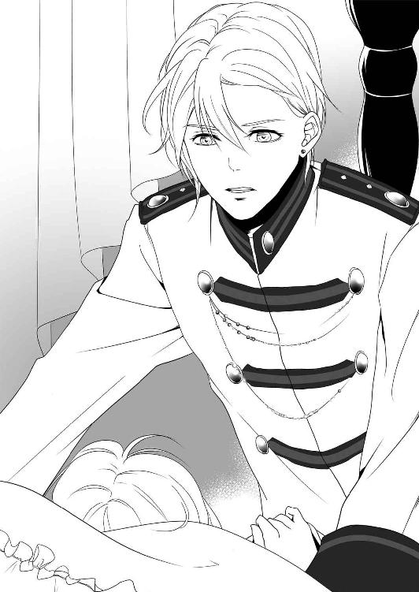

| 公爵さまのご寵愛は甘く淫らで意地悪で (LUNA文庫) | |
| 園内 かな | |
| 天海社 (2016) | |
公爵さまのご寵愛は甘く淫らで意地悪で
［著］園内かな
［イラスト］不破希海
プロローグ
部屋には、女のすすり泣く声とぐちょぐちょとねばついた水音が響いていた。
男はわざとゆっくり腰を動かし、女が達することのないよう、快感だけを与え続けている。
「あっ、あぁっ、ギルバートさま......、もう、許してぇっ」
女が腰を揺らし、身を捩りながら涙を零す。だがギルバートと呼ばれた男は、その嘆願を冷笑で拒否した。
「これは罰だ、レイチェル。二度と逃げようなんて思わないよう、君の身体に私の怒りを刻みこんでやろう」
ギルバートは激怒していた。
黙って屋敷を出て、己から逃げようとしたレイチェルに。
すでに知り尽くしている、レイチェルの中の感じる部分を抉るように腰をゆっくり動かす。思った通り、レイチェルは敏感に反応した。
「あーっ！ イくっ、ギルバートさま......っ！」
蜜壺がぎゅうぎゅうとギルバートの雄を締めつけてくる。達する寸前なのだろう。
ギルバートは腰を引いて、腰の動きを止めた。
「もう逃げないと誓うなら、もっと感じさせてやろう」
レイチェルは涙を零しながら首を横に振る。
「ちがっ、違い、ます......っ、わたくしは、逃げようとなんて......っ！」
「だったら、何故黙って屋敷を出た？ それも、私が数日留守をするとわかったその日のうちに」
「そ、れは......っ、あーっ！」
レイチェルが言い訳をしようと口を開いたので、また腰を押しこむ。何度か抜き挿しをして腹側の肉壁を擦ってやると面白いように喘ぎ、腰を揺らした。
「可愛いレイチェル。すっかり私に仕込まれ、淫乱になったな」
「あっ、あぁっ、いやぁ......っ！」
今度は、奥まで挿しこんで腰を合わせると上下に擦るように揺らす。中と同時に陰核を刺激されたレイチェルが、また泣きながら喘いでぎゅうぎゅうとギルバートの雄を締めつけた。
「ほら、こうすると反応がいい。無理矢理、妻にさせられ隙あらば逃げようとしても、身体は私を悦んで咥えこんでいる」
「ちがっ、あっ、あーっ！ ギルバートさまっ、わたくしは......っ」
レイチェルの否定の言葉は聞きたくなくて、ギルバートは腰を突き挿れる。
押しては引くごとに、ぐじゅぐじゅという卑猥な音が結合部からすることにギルバートはニヤリとした。薬も酒も使っていない。彼女の反応は、素だ。
レイチェルはギルバートの愛撫に感じ、もっと快感を欲しがっている。
「レイチェル、いいんだろう？」
「ふぁぁっ、あっ......、もっ、やだぁっ、止めてぇっ......！」
「このまま止めて、君の淫乱な身体が我慢できるとは思わないが」
そう言ってギルバートは彼女の唇に口付けた。たっぷりと唾液を送り込んでやるが、レイチェルは嫌がらず飲みこんでいる。舌を絡め合わせると、夢中になって応えている。
口付けながら腰を動かし、ぐずぐずに蕩けた中を擦りあげるとレイチェルは足を巻きつけてきた。
絶頂が近い。そう見てとったギルバートは腰の動きを止めた。
「あぁっ、やだぁっ、ギルバートさま......っ、いやぁ......っ」
「止めてほしいと言ったから、止めたんだ」
わざとそんな風に突き放して言うと、レイチェルは泣きながらねだる。
「ギルバートさまっ、お願い......っ、お願い、イかせてぇ......っ」
「さあ、どうしようか」
「イきたい、イきたいの......っ、ギルバートさま......っ」
ギルバートは腰を動かさないまま、再びキスをして執拗に咥内を犯してから言った。
「君のおねだりは聞いてあげたいが、私から逃げようとするんじゃ罰するしかないだろう」
「ちがっ、本当に、逃げてなどはいません......っ！」
「まだ言うか」
レイチェルが腰に巻きつけた足を手で押さえ、腰を引く。
ずるりと引き抜かれただけでも感じるのだろう、レイチェルは小さく喘いだが、蜜口に先端だけを咥えさせくぷくぷと浅い挿入を繰り返すとまた泣きだした。
「いやぁっ、ギルバートさま......っ、も、逃げないから......っ、言う通りにしますから......っ！」
やっと認めたか、とギルバートはゆっくり腰を押し進めて、でもレイチェルの中の感じる部分は擦らないように挿入した。
「本当だな、レイチェル」
「本当、です......っ、ちゃんと、しますから......っ」
その答えに満足したギルバートは、またゆったりとした腰使いでレイチェルに快感を与え始めた。だが、絶頂には一歩届かない筈だ。ゆるゆると達せない快楽を送り続ける。レイチェルはすすり泣いてねだった。
「お願いです、ギルバートさま......っ、イきたいっ、イかせてぇっ！」
彼女の純粋な願いだけが、ギルバートを満たす。
「私がもっと欲しいか、レイチェル」
「欲しいっ、ギルバートさまを、ください、お願い......っ、お願いぃっ！」
レイチェルがしがみついて、ギルバートを抱きしめる。
これは本当の気持ちだと、嘘など吐いていない反応だとわかる。
今この時だけは、ギルバートは疑わずに済む。
ギルバートが腰の動きを早くした。奥まで突き上げ、二人の快感を絶頂に導こうとしている。肉がぶつかる音がパンパンとしているがかまわず叩きつける。
レイチェルの中の、いいところを擦りあげると彼女は嬌声をあげてよがった。
「あっ、あーっ！ ギルバートさまぁっ......！」
「素直に感じると言え、レイチェル」
「ギルバートさまっ、好き......っ、好きぃ......っ！」
ギルバートの動きがぴたりと止まった。
「嘘は吐かなくていい。そうやって、私の機嫌を取ろうとしているのか？」
「ち、違いますっ、本当に......、本当なんです......」
「だったら何故......、いや、まあいい。今の言葉、忘れるな」
「はい......」
ギルバートは再び動きながら言う。
「嘘だったら、お前を完全に壊すまで可愛がってやろう。屋敷に閉じ込め、私だけを見るようにな」
「は、い......っ」
「私のことしか考えられないよう、徹底的に食らいつくし、貪ってやる。そうしてお前を造り変え、今のお前は何も残らないよう犯し尽くす」
「ギルバートさま......、好き......っ」
快楽の中、うわ言のように呟くレイチェルの言葉に嘘はないように思える。
顔を覗きこんでも彼女の表情は陶酔していて、ギルバートを恐れる色は含まれていない。
本当か。本当なのか。
ギルバートが動くままに揺らされるレイチェルの身体を、瞳を、すべての反応を見つめようとする。
朝まではまだ時間がある。
このまま焦らし続けるより、一度絶頂を味わわせてから再び同じ質問をして様子を見るのもいいかもしれない。
レイチェルは喘ぎながら、唇を動かす。
その唇の形は、ギルバート、と言っているように見える。
ギルバートは、彼女の言葉が嘘だったら己自身も壊れるかもしれないと覚悟した。
第一章
色とりどりの豪奢な衣装を纏った人たちが、笑いさざめきお喋りやダンスに興じている。
レイチェルはジュースが入ったグラスを握りしめながら、表立っては憂鬱さを出さないようにそっとため息を吐いた。
国王陛下の生誕を祝う、王城で催された舞踏会の真っただ中だった。陛下は五十二歳になった今も精力的に政に取り組み、賢王と名高い。国内外の有力な貴族たちがこぞって祝いの宴に参加しており、会場は人熱れでムッとしていた。
先ほどから壁の花になっているレイチェル・マルベラは、子爵の令嬢ではあるが単身ではここに参加できるほどの身分ではない。よほど有力な貴族でない限り、爵位を持つ本人ではない家族、それも跡継ぎではない娘がここに居るのは場違いと言えた。
それにはレイチェルの婚約者が関係するのだが......。
「ご覧あそばせ。カラナリオ公爵さまの見目麗しいこと」
「本当に。公爵さまが婚約を発表なされて、どれほどのご婦人がガッカリされたことでしょう」
レイチェルの耳に、確か侯爵令嬢と有力な伯爵夫人の会話が聞こえてきた。
カラナリオ公爵、というのがレイチェルの婚約者だ。
この会話の続きと着地点が、レイチェルにはわかってしまった。
「そうよね。マルベラ子爵令嬢なんていう、地味で特段目立つこともないご令嬢のどこがよろしかったのかしら」
「ご実家も大したことはないのでしょう？ 本当に、どうしてギルバートさまは見初められたのでしょうね」
そう。レイチェルはすぐ近くにいても気付かれないほど存在感のない、地味な女だった。二目と見られないほど醜い、という訳ではないが、皆が目を奪われる、という程の美しさも持ち得ない。まあ、普通の子爵令嬢だ。
それが突然、公爵から婚約者になってほしいと乞われ、トントン拍子に挙式の用意が調った。今では未来の公爵夫人だ。
だが、美しく身分ある令嬢たちは未だ諦めていない。レイチェルから婚約者の座を奪えるのではないかと、ギルバートにあの手この手で迫っている、らしい。
レイチェルがまたこっそりとため息を吐いた。
「あらっ、ギルバートさまがいらっしゃるわ！」
侯爵令嬢が上擦った声を出した。
レイチェルも視線を向けると、確かにギルバートが近づいている。
レイチェルは、逃げ出したくなるのをぐっと堪えて俯いた。
彼は海のような蒼色の瞳に、輝く金の髪をしていた。いつも優しげで温和な表情だが、鼻筋は通り目が覚めるような美しい容貌だ。輝く瞳も、笑みをたたえる唇も、スラリとした体躯も皆が目を奪われる。
しかも、有能なのだ。現王の甥で、王太子殿下の従兄弟にも当たるが、二人から頼りにされている。
そんな眉目秀麗で将来有望な婚約者がいるのだから、レイチェルはもっと自慢に思ったり、誇らしく感じたりしてもいいはずだ。
それなのに......。
また顔をあげて、ちらりとギルバートを見る。距離が近くなっていたので、目が合った。彼はにっこりと笑ってレイチェルに視線を送っていた。
（......こわい！）
なぜなんだろう。
ギルバートの唇は柔和な笑みの形になっているし、瞳も優しげに細められている。他の女性たちが「きゃあ」と浮かれた声を出して周囲は浮き足立った。
それなのに。
レイチェルは、彼の存在が怖くて怖くて堪らない。今すぐ逃げ出したいという気持ちがまた湧き上がるが、膝が震えて動けなかった。
ギルバートは女性たちの熱い視線を物ともせず、レイチェルのもとに一直線にやってきた。
「一人にさせてすまない、レイチェル。伯父上がなかなか離してくれなくて」
「それは......、離れない方が、よろしいのでは......」
ギルバートの言う伯父上とは、もちろん国王陛下のことだ。
レイチェルのことなど放っておいて、王や有力者と懇談する方がよほど有意義な時間だろう。しかし、この心優しい婚約者はとんでもないと首を横に振るのだ。
「せっかくレイチェルと一緒なんだから、共に過ごしたい。さあ、踊ろう」
ギルバートが手を差し伸べている。きらきらとした雰囲気を纏って。
レイチェルのような平凡な女には、この煌めく世界は畏れ多くて逃げ出したくなる。だが、そういう訳にもいかないだろう。
彼の手を取っても嫉妬の視線を送られひそひそ言われるし、手を取らなかったら女の世界で袋叩きにされてしまう。どちらにしてもレイチェルには辛いことになる未来しか想像できない。
レイチェルは、震える手を差し出されたギルバートの手に載せた。にっこり笑うギルバートだが、やはり恐ろしいと思ってしまう。
レイチェルは一人勝手に卑屈な思いを抱いて彼に苦手意識を持っているが、ギルバートは非の打ちどころがない、高潔で心優しい青年だった。ダンスのエスコートも完璧で、他の女性のお誘い......、つまり、レイチェルを追いやってギルバートを奪い取ってしまおうという考えの婦人たちにもきっぱりとした対応を取っている。レイチェルが一番大切なのだと、そう宣言してしまうのだ。
肩を抱き寄せられ「レイチェルは私の大切な人だ」とはっきり言われると、身を竦めて早くこの時間が過ぎ去ってほしいと願うしかない。
とてもじゃないが、誇らしげな顔をしたりうっとりギルバートを見つめたりなんて、そんな真似はできない。
今日も、レイチェルをしっかりその腕の中に囲ってしまうギルバートにリードされ、ダンスを嗜んでいた。もちろん、彼はダンスのステップも完璧でレイチェルはなんとかついていける程度の腕前でしかない。
本当に彼は一体、己のどこを気に入ってくれたのだろうか。
眉根を寄せ、考え込みながらステップを追いかけていると上から甘い声が降ってきた。
「レイチェル」
己を呼ぶとろりとした声に顔を上げる。ギルバートは声と同じように甘い瞳をしてここを見つめていた。
レイチェルは真っ直ぐに見返すことができず、ふいっと目を逸らしてしまった。胸がドキドキするのは、彼のような素敵な人に見つめられているからなのだろうか。それとも、なぜか恐ろしくて逃走してしまいたいというレイチェルの気持ちが暴れているのだろうか。
彼は優しい声音のまま、ゆっくりと尋ねた。
「レイチェル、何を考えているんだい？」
「その......、わたくし達の、婚約のこと......」
「話を、しようか」
柔らかな声で提案してくれる彼に、レイチェルはこくりと頷いた。
曲が終わると、またエスコートされて今度はバルコニーへと向かった。背中に当てられた彼の手が熱く感じられる。なんだか暑くもないのに汗が出てきた。レイチェルは怖いという気持ちを押し隠し彼に連れられ広間の外に出た。
喧噪から離れ、爽やかな夜風に吹かれると過ごしやすい。思わずふうっと大きく息を吐いてしまう。先ほどまでは、無意識に息を詰めるほど緊張していたのかもしれない。
すぐにその様子に目ざとく気付いたギルバートが口を開いた。
「気疲れしただろう。ここは人目がない、せめて寛いでほしい」
「ええ......」
貴方といても緊張します、とは言えない。
なんとなく、バルコニーの手すりに寄りかかり庭を見るように立つ。ギルバートはレイチェルの背後から覆いかぶさるようにそっと抱きしめた。また心臓がばくばくと音を立てて鳴る。
けれど、彼が真後ろにいるせいでレイチェルの視界には腹のあたりでゆるく組まれた腕しか見えない。彼の顔が見えない方が、話をするにはいいかもしれない。
レイチェルの頭上から声がする。
「婚約の件だが、君が望んではいないのに強引に進めた自覚はある」
「そう、なんですね。わたくしは、やはり、どうして貴方の婚約者に選ばれたのかがわからなくて、その......」
「レイチェル」
また名前を甘い声で呼ぶと、彼はレイチェルをくるりと反転させた。勢い、向かい合うことになる。それも、至近距離でだ。
彼の顔を見られず、レイチェルは俯いてしまう。
ギルバートはレイチェルの額に軽く口付けをしてから、顎を持ち上げ視線を合わせた。
「言っただろう。私は、君のその笑顔に捉えられた哀れな男だと。レイチェルは私の言うことを真面目に聞いてくれない。本当なのに、信じてもらえないのは辛いよ」
「それは......、ごめんなさい......」
自信などある訳もないし、まだ婚約者となったのも何かの間違いではないかと疑ってしまうのも事実だった。そこを指摘されると、申し訳ない気持ちでいっぱいになる。
レイチェルが項垂れると、ギルバートはぎゅっと抱きしめて耳元で囁いた。
「本当なんだよ、君の笑顔はとても可愛らしい。私は一目で惹きつけられたし、どうしてもレイチェルを私だけのもの......、花嫁にしたいとすぐに思ったんだ」
「ギルバートさま......」
「信じてくれるまで何度でも告げよう。レイチェル、私と結婚してくれ。今はまだ君の気持ちが追いつかなくても、共に暮らしているうちにきっとうまくいく。そうなるよう、すべての困難を取り除き君を守るから」
こうも真摯に説得されると、彼を信じたくはなる。
最初にギルバートと出会ったのは、とある伯爵家の別荘で開かれた野遊びの集いだった。男たちは狩りや乗馬を楽しみ、女たちはピクニックやおしゃべりに興じる。
レイチェルはたまたまご縁があって、その集いに参加できたのだった。レイチェルの兄の上司の遠縁が主催の伯爵家の一族であり、定員に空きができ、うら若い女性だったので、場を華やかにする花として呼ばれたのだ。今から考えると、その伯爵家のご令嬢の引き立て役として丁度よかったのだろう。
一方ギルバートの方は是非に、どうしてもと呼ばれ、政治的な付き合いから渋々顔を出した。だが、挨拶だけをしてすぐにでも帰る予定だった、らしい。
若き公爵のギルバートには、黙っていても妻の座を狙う女や、血縁を妻とさせようとする男たちが寄ってきた。
彼はにこやかながらも、妻となる人は自分で決めると主張し政治的な繋がりの結婚をすべて拒絶していた。
後からレイチェルが聞いたところ、今は亡き彼の両親は政略結婚で、その関係は良好とは言えなかったらしい。最後まで反目しあったままの二人を見たギルバートは、そのような結婚生活はしないと決めていたのだ。だから、ギルバートは己が見初めた女性であれば身分容姿関係なく、妻にしようと考えていたようだ。
二人が出会った時の様子を、今でもレイチェルはよく覚えている。
花が咲き乱れる庭園の中、主催者である伯爵のご令嬢が美しく着飾った姿でギルバートの前にさりげなく現れた。その周囲にいたレイチェルたち数人の友人女性は、一段も二段も容姿が劣り、衣装も上等ではなく、身分も下だった。
だが、伯爵やご令嬢の思惑から外れ、ギルバートはレイチェルを見初めたのだ。
ギルバートは堂々と言ってのけたのだ。
『貴女の笑顔に見惚れました。どうぞお名前を教えてください、お嬢さん』
皆も驚いたが、一番驚いたのはレイチェルだった。
『あー』とか『いえ』とか要領の得ない答えしか口から出てこない。すると、伯爵令嬢がはっきり答えてくれた。
『彼女の名は、ギルバートさまのお耳に入れるような物ではございませんので』
その後、レイチェルは伯爵家の関係者にその場から退出を求められ、そのまま別荘からも帰された。伯爵家の紋が入った立派な馬車で、きっちりと自宅まで送り届けられるという特別待遇だった。
だが、ギルバートは諦めない男だった。
彼はレイチェルの名前と身分を調べ、家を突き止め、邸宅までやって来たのだ。
まずレイチェルの父に面会を求め、お嬢さんとの婚姻を認めて頂きたいと言い放ったので、父は腰を抜かしそうになっていた。
もちろんレイチェルも、驚きで口もきけなかった。
どうにも、彼の気持ちが信じられない。何か裏があるのではないか。家族の誰もがそう疑った。
レイチェルは父や兄を問い詰めた。
『実は我が家には物凄い隠し財産があるとか、領地には素晴らしく利益を生む産業があるとか、そういうことはありませんか？』
『あるわけないだろう』
返事はにべもなかった。そんな裕福な家柄ではないのだ。まるっきり貧乏という訳ではないが、富や権力があるかと聞かれたならば、まあない方だ。
ギルバート本人に尋ねても、レイチェルの笑顔に一目惚れした、としか言ってくれない。
笑顔と言われても、レイチェルにはそんなに魅力的にうっとりされる程の笑顔なぞ浮かべた覚えもない。何がよかったのだろうか。
どちらにせよ、公爵がそう望むのであれば、とレイチェルの父兄は流され希望されるがままに婚約の準備を調えた。
この王国では、子爵以下の貴族とそれ以上の貴族では、同じ爵位を持っている家柄といえども大きな隔たりがある。
レイチェルは今までの交流範囲とは異なる、上流貴族との付き合いを学び、ギルバートのいないところで冷たくあしらわれ落ち込んだりしながらも、彼との結婚準備を進めているところだ。
レイチェルが遠い目をしていろいろ思い出している間に、ギルバートは耳や頬に軽く唇を当てていた。
そうだった。ここは王城の舞踏会会場で、まだギルバートとバルコニーで話している最中だ。
過去の回想から戻ってきたレイチェルだったが、彼が耳たぶを甘く噛んだので「あんっ」と小さな声が出た。恥ずかしい声を出してしまったと羞恥に身を捩って抗議する。
「ギルバートさま、いけません」
止めて欲しいと訴えるために彼を見上げ、そしてレイチェルは見なければよかったとすぐに目を逸らした。
ギルバートは笑っている。笑顔なのだが、目が煌めいているというか、爛々と光っているようでとても恐ろしい。レイチェルの身体がふるりと震えた。
「レイチェル、寒い？」
彼はレイチェルの反応に、本当に目ざとく気付く。それもまた恐ろしいような気がする。
レイチェルは頷いて言った。
「もう、戻りましょう」
「戻れば、またたくさんの人に割り込まれることになる。こうすれば、暖かいだろう？」
ギルバートはレイチェルをぎゅっと抱きしめた。ダンスをしているよりも密接にくっついている。これはもう、抱擁だ。レイチェルの心臓が激しく跳ねた。
「い、いけないわ、こんなこと。こんな場所で......」
「ここでなければいい？」
笑いを含んだ、冗談のような口ぶりだがレイチェルには恐ろしくて仕方がない。一つでも返事を間違えると、とても怖いことになりそうだ。
レイチェルは首を横に振って言った。
「まだ、ダメ......」
「そうだな。早く式を挙げてしまいたいよ。晴れて夫婦となって、君をいつも傍に置いておきたい」
そう言ってギルバートはまたぎゅうぎゅうとレイチェルを抱きしめる。そうしてしばらくレイチェルと温度を分け合ってから、彼は顔を覗きこんで言った。
「ホールに戻ればまた、引き離されてしまうだろう。友達か知り合いで、傍にいてくれそうな人はいた？」
それを聞いたレイチェルの表情は曇ってしまった。悲しいことに、友達はいない。知り合いさえもだ。
婚約前なら、レイチェルにだって女友達はいた。友達とまでは言えない知り合いだってたくさんいた。
だが、婚約すると付き合う人たちが一気に変わってしまったのだ。友人たちは皆、公爵夫人となるレイチェルと付き合うには身分が低く家格が釣り合わない、と離れていってしまった。今レイチェルを取り巻く意地悪な人たちに、何か嫌なことを言われてしまったのかもしれない。
レイチェルは、今まで通り友人が子爵家や男爵家の縁者でも気にしない。むしろそちらの付き合いの方が気は楽だ。だから今まで通りに友達として触れあおうとするのだが、皆はレイチェルを避けているようでぜんぜん会ってくれない。手紙を送っても返事は無かった。
思い上がった嫌な女だと思われているのだろうか、とレイチェルは落ち込んでいる。
新しい付き合いの中でも新しく友達を作ろうと、公爵家と関わりあいのある家柄の人にも思いきって話しかけてみた。だが、レイチェルの存在が気に食わないのか、皆は冷たい目で見るばかり。
誰も友達どころか、知り合い程度の付き合いさえしてくれない。
レイチェルは孤独だった。
レイチェルの沈んだ様子に、ギルバートはすぐ返事がなくとも状況がわかったようだ。温かな手で背をゆっくり撫でて言う。
「大丈夫だよ。付き合う顔ぶれが変わったところだから、親しい人ができなくても当然だ。その分、私が傍にいるから。そんなに悲しそうな顔をしないで」
「わたくし、友人を作るのが下手なようで......、誰とも親しくなれないんです」
ギルバートが慰めてくれるから、ついレイチェルもそんな愚痴を言ってしまう。けれど、彼は嫌な顔をせずにっこりして言った。
「他の人には、レイチェルの良いところがわからないんだろう。気にするな。私はちゃんとわかっているよ、レイチェルが優しい良い女性だと」
「そんな......、良い人でもないんですけれど......」
「そんなことはないよ」
褒められて恥ずかしい。でも、彼の心遣いは嬉しかった。
「ありがとうございます、ギルバートさま。励ましてくださって、嬉しいです......」
「ふふ、ではお礼の口付けでも頂こうか」
「まあ......」
ギルバートは素早くレイチェルの唇を奪うと、ぺろりと舌で舐めた。
「っ......いけません、ギルバートさま......」
「......送っていこう」
「はい......」
レイチェルにはよくわからないが、ギルバートは何やら耐えるような表情になっていた。
「一緒には帰れないが、馬車に乗るまで見届けよう」
「はい、ありがとうございます」
一人ぼっちのレイチェルを気遣い、もう帰してくれるらしい。しかも、見送りつきだ。
ホールを横切る時、何人もの人から引き留められ、挨拶をしたいと声をかけられたが、ギルバートはそのすべてを退けレイチェルを馬車まで送り届けてくれる。
何て良い人なのだろう。それに、優しい。気遣ったり、励ましたりしてくれる。
レイチェルの人生の中で、今までこんなに己のことに心を砕いて親身になってくれる人などいなかった。実の両親や兄でさえ、ここまでレイチェルのことを考えてはくれていないだろう。
それなのに。
レイチェルは、自分に自信がないからと彼を疑ったり、いたずらに脅えたりと失礼な言動ばかりだ。
こんな良い人を疑いのまなざしで見てしまった、とレイチェルは深く反省した。
馬車に乗りこむよう、扉まで開けてくれたギルバートにレイチェルは心からお礼を言った。
「ギルバートさま、本当にありがとうございます。わたくしのような、つまらない者にこんなに優しくしてくださって......」
ギルバートがまた笑みを浮かべた。それはいつもの如く、レイチェルの本能が怖いと感じるものだったが、気のせいだとその恐怖心をねじ伏せた。
ギルバートは優しく囁く。
「君はつまらなくなどない。けれど、寂しそうで孤立しているように見える。私がいつも隣に付いていてあげられたらいいんだけれど、婚約者という立場だけでは難しいな」
「いえ、そんな。今でも十分によくして頂いています」
レイチェルの言葉を聞いているのかいないのか、ギルバートは「そうだ！」といかにも妙案を思いついたという声を上げた。
「婚約期間を短くするのはどうだろう」
「えっと、それは......」
決められた婚約期間を短くなどできるのだろうか。
きっとギルバートがすると言ったら可能なんだろう。
彼はにこりと笑って言った。
「これ以上、準備期間も必要ないだろう」
「それは、そうですね」
「もし要る物があれば、一緒に暮らしてから取り寄せればいい。もちろん、君を迎え入れる準備はすべて終わらせているよ。レイチェルは身一つで来てくれたらいいから」
「は、い......」
勢いに押し切られ、レイチェルがそう言うと彼は「よし」と一つ頷いて言った。
「では挙式の日取りは改めて知らせるよ。何も心配せず、待っていてくれたらいい」
「わかりました......」
ギルバートがそう言うなら、それでいいんだろうか。
レイチェルは了承の返事をし、彼に口付けられ馬車に乗って自宅へと帰ったのだった。
そこからは慌ただしい日々となった。
あっという間に挙式の当日となり、何が何やらわからない間にレイチェルは花嫁となり、ギルバートの隣で夫婦の誓いを立てた。
そして今、レイチェルは初夜の寝室でギルバートを待っている。
白のナイトドレスだ。肌触りの良い生地のそれは、レイチェルの身体を魅惑的に見せている。
透き通って胸や身体のラインが丸見えだ。
恥ずかしい、けれど初夜とはそういうものだからと公爵家の教育係に言い含められていた。
レイチェルは待った。
やがて、扉が開いてガウンを纏っただけのギルバートが入ってきた。
彼はレイチェルを見ると目を輝かせた。比喩でなく、ぎらりと光ったのだ。
レイチェルは一気に逃げ出したくなり、ベッドに潜り込んで丸まりたいと思ったが何とか耐えた。
ベッドに腰掛けるレイチェルの隣に座り、ギルバートは肩を抱いて言った。
「レイチェル、可愛いよ。今すぐ食べてしまいたい......」
その声は低く掠れていた。レイチェルが世慣れていたら、欲望が滲んだ物だと判断しただろう。
しかし、何の経験もないレイチェルには男の欲望などわからない。
「ギルバートさま......」
食べる、というのは初夜の比喩か何かなんだろうか。レイチェルがそう考えているとギルバートが頬に口付けてから顔を覗きこんで口を開いた。
「私たちは夫婦になった」
「はい」
「だから、隠し事はよくないと思う」
「え、ええ......」
確かに、夫婦の間に嘘や隠し事はよくないだろう。だが、この会話の行き先がわからない。
何かあるんだろうか、と思うレイチェルに、ギルバートは真摯な顔をして言った。
「先に、打ち明けておこう。私の告白を聞いてほしい」
「な、何でしょうか......」
一気に胸がドキドキしてきた。
彼は一体何を隠しているのだろうか。とんでもない事や、レイチェルには想像もつかないような話だったらどうしよう。
レイチェルは彼の言葉を待った。
「私がレイチェルの笑顔に惹かれたのは本当だ。だが、それだけじゃないんだ」
「それだけではない、とは？」
「私は、君を泣かせたい。ひと目見た時から泣き顔が見たいと強く思っていた」
「......え？」
レイチェルの頭脳では言っている意味を理解できなかった。
言葉は聞こえたが、頭を素通りしたのだ。
不思議そうな顔のレイチェルに、彼は熱っぽく説明を続ける。
「レイチェルの笑顔は可愛い。にこにこして、愛らしくて。それで、あの野遊びの時に君の笑顔を見た瞬間、私は思ったんだ。この子を泣かせたら、どんなに可愛らしくいい顔になるだろうって。それを想像しただけで、興奮して堪らない」
「..................」
レイチェルにはやはりよくわからない。
だが、ここから逃げた方がいいのではないかと本能が命じる。
思わず、お尻をずらして彼から遠ざかろうとする。すぐに腰を抱き寄せられ、腕が強く絡み付いてきたが。
彼は慌てたように言う。
「泣かせると言っても、痛いことや傷つけることはしないから。そこは安心して欲しい。レイチェルの方からして欲しいと言うなら、やぶさかではないが」
やぶさかではない、と言われた時にレイチェルは心底恐ろしいと思った。首を激しく横に振り、叫ぶように言う。
「やっ、やめてください！」
「......大丈夫だよ。痛くはしないって。むしろ、よくするから」
ギルバートはそう請け負うと、レイチェルの顎を指で掴みこちらを向かせ、ゆっくりと口付けを始めた。
それは本当にゆっくりで、何ら急ぐことのない行為だった。
ちゅ、ちゅと優しく軽いキスを繰り返した後、啄むようにレイチェルの下唇を唇で挟む。そのままやわやわと吸ったり、甘噛みしたりと唇での触れあいをたっぷり堪能する。
その次は、唇の裏側に舌を這わせ始めた。歯茎と唇の付け根にまでゆっくりと舌を這わせ、じわじわとレイチェルの官能をあげていく。
「はぁっ......」
息苦しく、そして身体の内部の熱が高まってきて、レイチェルは大きな息を吐いた。
ギルバートはその隙に咥内にも舌を挿しこみ、舌の付け根や上あごなど、レイチェルが思いもよらなかった部分を舐め刺激していく。
「んっ、ん......」
飲み込みきれない唾液が、レイチェルの唇の端から零れていく。
確かに快感はある。けれど、何かが不安で逃げ出したくて仕方がない。
そんなレイチェルの両手を、ギルバートは己の両肩を掴むように導いた。レイチェルは素直に彼に触れた。縋るものがあるというのは、不安を打ち消せるのかもしれない。
皮肉なことに、縋るものは不安を与える本人だけなのだが。
ギルバートはレイチェルの舌をくすぐり、絡めている。そうしながら、レイチェルの身体を撫でていた。背中や腕、脇腹などに触れられただけでびくびくと反応してしまう。
レイチェルがぼうっとして、触れられるがままでいると彼はようやく唇を離してレイチェルをベッドに横たえた。
「今夜は私に任せて欲しい。レイチェルは感じているだけでいいから」
「......っ」
やはり、彼の目が怖い。
先ほどの食べるという言葉から、レイチェルは己が獲物であるかのような錯覚に捉われた。
猛獣に狩られ、食べられてしまう哀れな小動物。
その発想から、レイチェルはハッとした。
今まで、なぜか彼の瞳が怖いと感じてしまったのは、狩られる獲物としての本能ではなかったのかと。
「あっ、あの、ギルバートさま......」
「何だい」
くくっ、と喉の奥で笑っているギルバートは、いつもの優しそうで美しい公爵だが、本当は大型の肉食獣かなにかなのだろうか。
「その、ひょっとして、以前から、わたくしをそういう目で見ていらした、とか......？」
恐る恐るだが、尋ねてしまった。
できることなら、そんなことはないよと笑い飛ばして欲しいのだが。
だが、ギルバートはふふっと笑って言った。
「そうだよ。私が早く食べてしまいたいと、欲望を込めた目で見る度、君はびくつきながらも何のことかわかっていなかった。そういう反応も、最高だったよ。いつ犯してしまおうか、無理矢理ヤってしまおうかといつも考えていたがな」
「ひっ、ひぃ......っ」
怖い。レイチェルの不安は最高潮に達した。
思わず逃げようと、ベッドの中で身をくねらせずり上がろうとする。
だが、すぐ腰を掴まれ引き戻された。彼はうっとりと口を開く。
「やっぱり、純真なレイチェルの怖がる様子を見ているのもいい。けれど、今まで我慢すれば十分だ。見て愛でるのもいいが、私はやっぱり直接味わい、君を泣かせたい」
「いやぁっ......」
「大丈夫、ひどいことはしないから。思い切り気持ちよく感じさせてあげよう」
とんでもなく恐ろしいし、処女の本能がこの場から逃げ出せと騒ぎ立てる。
だが、じたばたと暴れていると、彼がすっと笑みを消して真顔で言ったのだ。
「抵抗するなら、愛撫なしですぐに挿れて痛くするよ？」
「ふっ、ふえぇ......」
もう涙目だった。怖くて身体がぶるぶる震えて、抵抗する気力など霧散した。
レイチェルが動きをぴたりと止めて震え、脅えていると彼は再び笑顔を見せてくれた。
「そんなに震えなくても大丈夫だ。大人しくしていたら、優しくするから。ね、レイチェル」
そう言って頬を優しく撫で、目尻に口付けてくれた。
レイチェルは黙ってこくこくと頷き、もう何の抵抗もせず彼に任せようと思う。
それほど、彼の言動は巧みなのだ。威圧する時は声を低く、瞳は剣呑な力を込めて。懐柔する時は、優しい声と蕩けそうな瞳で名前を呼んで。
レイチェルごとき小娘が敵う相手ではなかった。
狩られた獲物がすべてを諦め、貪られる為にじっとしているとギルバートは額に、頬に優しく口付けていく。その唇が、首筋まで降りていくとレイチェルの身体は意識せずにびくりと動く。感じてしまっていた。
ギルバートはその喉元に思いきり吸いついた後、口を大きく開けて柔らかく噛んだ。歯を立てられ、レイチェルは恐ろしくて涙目になる。
もちろん、このまま噛みつかれたらどうしようという怖さはある。だがそれよりも、彼の行為が気持ちよくて、このままだとどうなってしまうのか、という恐れの方が心を占めていた。
ぴりりとした痛みを伴う行為なのに、身体は感じてしまっていた。
「はぁっ、ぁぁ......」
鎖骨まで彼の唇が移動し、また噛んだり舐めたりしている。その時にはすっかり足の間が潤い、レイチェルはお漏らししてしまったようで足をもじもじと動かした。
当然、目ざといギルバートはそんな様子に気付いて言う。
「まだ肝心の場所には触れてもいないというのに、もう感じているのか」
「っ......」
「随分と素質があるようだな。花嫁が淫乱のようで、嬉しいよ。仕込み甲斐がある」
「いや、いやぁ......」
かなり意地の悪い言葉だ。ギルバートはレイチェルを言葉でも嬲って虐め、泣かせようとしているのだろう。
そうわかってはいても、心無い言葉に傷つく。レイチェルが涙ぐんで顔を背けると、彼は首筋を舐め上げて囁いた。
「そうだろう？ 愛してもいない、無理矢理結婚させられた相手に触れられただけで感じて濡らすなんて、淫乱そのものじゃないか」
「えっ......。でも、わたくし、ギルバートさまのこと、お慕いしています......」
「......！」
ギルバートが目を見開いた。まじまじとレイチェルを見つめている。
レイチェルも、そろそろと視線を合わせ、そして恥ずかしくて目を伏せた。
確かに、ギルバートにはよくわからない怖さがあって、恐れてもいた。強引に婚約者とされ、戸惑いもした。
けれど、それ以上に優しくされたり気遣われたり、励まされたりしたことは嬉しかった。
ギルバートほどの男にそんな風にされて、舞い上がらないように自制はしていたけれど、やはり彼を好きにならずにはいられなかったのだ。
「その、ギルバートさまは、わたくしのことをいつも気にかけてくださって、それが嬉しくて......」
「レイチェル、それは本当か？」
こっちを見て、と囁かれレイチェルはまた瞳を向けた。こくり、と頷いたが恥ずかしくて勝手に目が潤んでしまう。
ギルバートは「ああ」と嘆息の声を出した。
「そんな風に、気持ちを告げても泣きそうな顔をするとは知らなかった......」
「ギルバートさま......」
「はぁっ......、快楽で蕩けさせて泣かそうと思っていたが、私も興奮してしまった。君に溺れて、夢中になってしまいそうだ」
レイチェルの瞳がますます潤む。今度は喜びと羞恥が混ざり合った感情でだ。
ギルバートがそう言ってくれるのは嬉しい、けれど恥ずかしい。
それは決して、意地悪に辱められて涙するものとは違った。
ギルバートはまた愛撫の手を再開した。ナイトドレスの上からやわやわとレイチェルの胸を愛撫し、たまに胸の先端を指の腹で擦って刺激する。もどかしい快感に、レイチェルの乳頭がぷっくりと膨らんできた。
「気持ちいい？」
「っ......」
「ほら、言って」
指で先端を摘まれ、もう一方の胸を舌で舐めあげられる。ぴんと舌先で胸の先端を弾かれ、レイチェルは「あぁっ！」と声を上げてから慌てて唇を閉ざした。
ギルバートはそんなレイチェルに、含み笑いで愛撫を続けて言う。
「言わないなら、このまま胸ばかりを可愛がるよ。一晩中でも」
唇でぱくりと胸の先端を含まれ、舌先でちろちろと嬲られる。疼くような快感は、なぜかお腹の中に溜まっていった。
「あぁんっ......！ 気持ち、いい、です......」
「ならば、こっちとはどっちが気持ちいい？」
ギルバートは今まで口に含んでいた胸とは反対の胸の先端を、また舐め始めた。ナイトドレスはまだ脱がされておらず、絹ごと舐めているので布は唾液で濡れそぼっている。そして、その濡れた布から突き出した乳首はとても淫靡だった。
「あぁっ、いやぁ......っ」
「こっちの方が嫌なのか？ それなら、よくなるようにもっとしてあげないとね」
ギルバートは楽しそうにそう言うと、胸の先端をちゅうっと吸った後甘く噛んだ。
「ひゃんっ！ あっ、あぁっ......」
軽く痛みを与えた後、また舌を這わせて愛撫する。その落差にレイチェルの身体は蕩けた。
「はぁっ、あっ、いやぁ......っ」
「こっちもどうかな」
ギルバートの指が内腿を何度か撫でて、さりげなく足を開かせる。レイチェルがそれに従うと、彼の手は下着の上から襞の間をすりすりと何度か上下させた。
ギルバートの目当てである突起がすでにぷっくりと膨れて薄い布を少し突き上げている。彼は目ざとく気付きそこを指の腹でゆっくり撫で始めた。
「あっ、あぁぁっ......」
レイチェルの足がぴくぴくと反応して動く。
快楽を司るその突起に触れられたのは初めてだった。快感が身体中に巡っていく。
刺激が強くなりすぎないよう、ギルバートは触れるか触れないかの力でそっと薄布越しに指の腹を上下に行ったり来たりさせている。
その感覚がまたもどかしく、レイチェルは無自覚に腰をくねらせ、いいところを彼の指に押し当てようとしてしまった。
「ふふ、レイチェル。いいんだね？ 腰が浮いてるよ」
「あぁっ、やぁ......っ、恥ずかしい......っ」
「気持ちいいとか、もっととか、わかりやすく言ってくれ」
笑いを含み、からかいながらのギルバートの台詞の筈なのに、なぜかその要望は真剣な思いを含んでいるようでレイチェルは思わず彼の顔を見上げた。
ギルバートは、何か、渇望するような視線をレイチェルに向けていた。それが何かはわからない。さっきまでのレイチェルなら、怖くて逃げ出したくなっていただろう。
けれど、夫婦となって、こんな行為をする仲なのだ。逃げてはいけない、レイチェルはそう咄嗟に思った。
「ギルバートさま......、恥ずかしいけれど、気持ちいいです......、もっと、してください......」
「ああ、レイチェル......」
ギルバートが愛撫の手を止め、そしてキスをくれた。
それから、レイチェルのナイトドレスと下着を脱がせる。この国の下着は、左右の腰骨のあたりで紐を結わえ逆三角形の布地を固定している。ギルバートは結ばれていた紐をしゅるりとほどき、レイチェルを生まれたままの姿にした。恥ずかしいけれど、ナイトウェアも下着も濡れて透けていたので、やっと脱がしてくれたと少しホッとできた。
それから、彼も裸になった。ガウンを脱いだギルバートの逞しい裸体に、レイチェルはドキドキし、そしてやっぱり恥ずかしくて目を伏せてしまった。
ちらりと見えたギルバートの雄の部分は、大きくそそり立ってへそに付いていた。レイチェルがその部分を見たと分かったのだろう、ギルバートが宥めるように優しい声を出す。
「こんなになってしまっているが、レイチェル、安心してくれ。急に挿れたりはしないから。たくさん感じさせて、君から我慢できなくてねだるくらい気持ちよくさせるから」
「っ......」
それは、いいことなのかどうなのかレイチェルにはわからない。それに、やっぱり怖い。
けれど、ギルバートは無理強いしないと言ってくれた。それは嬉しい。
レイチェルはこくりと頷いた。
ギルバートが手淫を再開した。
襞を割り開き、溢れる蜜を指に纏わせるとそのまま上に伝わせていく。膨らんだ突起をぬるぬると擦られたかと思うと、指で摘まれる。
「あっ、んっ！」
レイチェルは彼の思うがままに喘ぎ、身体をひくつかせた。
ギルバートはそうやって突起に触れながら、胸の先端にも唇での愛撫を施していた。
「どっちも硬く尖ってる」
「あっ、いややぁ......っ」
「嫌じゃなくて、いいだろ？」
それを認めてしまうのは、とても恥ずかしい。けれど、促されてレイチェルは口にした。
「気持ちいい、です......っ」
「じゃあ、軽くイっておこうか」
「......えっ、あっ！ あぁっ！」
ギルバートの指が、突起に触れながら円を描くように動き始めた。さっきより強く押し潰され、快感がびりびりと下腹部に流れていく。
「ほら、レイチェル。気持ちいいって言いながらイって」
「あぁぁっ！ きもち、いい......っ！ イっちゃう！ あーーっ！」
足をぴんと伸ばし腰を突き上げ、レイチェルは達してしまった。
はあはあと荒い息を整え、少し目を瞑って身体も心も落ち着かせようとする。
初めて、イってしまった。
胸がドキドキするし、恥ずかしい。けれど、気持ちよくて頭の中が白くなるようだった。
レイチェルはそのままぼうっとしていたが、我に返るとギルバートが足の間に入り込んでいた。
それだけではない。レイチェルの足を大きく広げ秘所が丸見えになる体勢にさせると、そこに顔を近付けまじまじと見つめているのだ。
「やっ！ ギルバートさま、見ないでぇっ！」
「恥ずかしがるな。これは夫婦としては当然の行為なのだから」
「えっ、そ、そう、なのですか？ でも、こんなところ見ないでほしくて......っ、あぁっ」
「レイチェルはここも慎ましいな。クリトリスが皮を被ったままで見えない。剝き出してやろう」
ギルバートがそう宣言し、包皮を剥き上げてしまった。
レイチェルには何のことかわからないが、今まで隠されていた女の部分が暴かれ、空気に触れさせられ、そして彼の視線に晒されていることは理解した。
「いやぁ、見ないで、恥ずかしい......っ」
涙目になって首を横に振るレイチェルに、ギルバートはにっこりと美しい笑顔を送った。
「わかった。見ないようにするよ」
そう言うと、ぱくりと剝き出しの陰核を唇に挟み、舌でちろちろと舐め始めた。
「あっ！ ああぁっ！ あーーーっ！」
ギルバートの舌は巧みに動いた。柔らかな腹の部分でぬるぬると陰核を全面的に刺激したかと思うと、舌先でぴんと弾いて強く愛撫する。そうかと思うとまた優しくもどかしく舐められ、レイチェルはまたすぐに絶頂が近付いてきたのに気付いてしまった。
「ああっ、いやぁっ！ ギルバート......、さまぁっ！」
ギルバートは唇を離し、足の間からレイチェルを見上げて言う。
「イきそうなのか？」
「っ、はい......」
「イく時の言葉は、もう教えただろう」
彼はそう言って再び口淫に戻った。
陰核を舐めしゃぶられた後に、軽く歯を立てられレイチェルは大声をあげながら達した。
「あぁぁっ！ イイっ！ イっちゃう、ギルバートさま......っ！」
先ほどより大きな快感で、身体がびくびくと何度か痙攣してから、レイチェルはくたりとシーツに横たわった。
「今のはよかったよ、レイチェル。私の名前を呼びながら達するのはいい。今度からもそうしてくれ」
「はぁっ、はぁ......っ、くぅん......」
まだ息が整っていないのに、またギルバートが蜜口に指を触れさせたのでレイチェルは犬のように鳴いてしまった。
「イった後だし、こんなに濡れているから痛くはない筈だが......、どうだ？」
レイチェルの中に、彼の指が一本、侵入してきた。
痛みはないが、違和感はある。レイチェルは眉根を寄せながら言った。
「痛くはないですが、変な感じで......っ」
「少しずつ、慣らしていこう」
ギルバートの指が動き始めた。それはまさしく、レイチェルの中を犯していく行為のように思われた。
ギルバートの指はただ抜き差しをするのではなく、レイチェルの狭い中を弄り回している。その媚肉を指の腹で擦って観察し、どこが感じるかを探っているのだ。
入り口近くを浅く弄っていた指が、奥へと媚肉を擦りながら移動していく。その指がお腹側の真ん中ほどの部分を擦った瞬間、レイチェルの身体がびくんと反応した。
「あっ！」
「ここか？」
己でも知らなかったその部分を撫でられると、身体が溶けるような快感が一気に溢れ出す。どうしてこんな風になってしまうのか、わからないが触れられたそこにすべてが集約しそうだった。
「あっ、あっ！ あぁっ、そこ、いやぁっ！」
はあはあと荒い息をして、口を開けてのたうってしまう。別の身体に造り変えられてしまうようで、この先の快楽をレイチェルは本能的に恐れた。ギルバートの腕を掴んで、何とか止めてもらうよう力を込める。
彼はそれに従ったのか、指を引き抜いてくれた。
「レイチェル、落ち着け。気持ちよくなっているだけだ」
レイチェルはホッとしたが、すぐにギルバートは手のひらを上向きにして人差し指と中指の二本をすっと挿しこんだ。レイチェルの蕩けた蜜口はすんなりと指を飲みこむ。そして、見つけたばかりの箇所を指の腹でくすぐるように擦り始めた。
「あぁぁっ！ やっ、やぁんっ！」
「怖がるな。ちゃんと呼吸して、感じればいい」
そう言いながら、ギルバートは胸に口付ける。中にある指先を折り曲げたり、ぐちゅぐちゅと水音をさせたりしながら出し挿れされると、レイチェルはよがって腰を揺らした。
「あぁぁ！ 感じすぎて、それ、いやぁっ！」
「中で感じるようにしておかないと、後で辛いのは君自身だ、レイチェル」
そう言うと、ギルバートはさらに親指の腹で膨れて露出している陰核を撫でまわした。
「ひぁぅっ！ あっ、イくっ！ ああぁぁっ！ ギルバートさまぁっ、イっ、あぁぁぁっ！」
先ほどの快感より、深く激しいものが頂上まで駆け上がっていく。そのままレイチェルは絶頂から飛び降りた。大きな快感に、目の前が真っ白になる。
レイチェルの身体はがくがくと震えたかと思うと、中にある指を思い切り締めつけて達した。
「あっ、あーーーっ......」
ギルバートは動きを止めず、ねちねちと胸の先端を舐めしゃぶりながら中の指を動かし続ける。すると、指の出し挿れの動きに合わせて蜜がぴゅっ、ぴゅっと飛び散った。
「すごいな、潮を吹いてる」
「あっ、いやっ！ いやぁっ！」
恥ずかしいお漏らしまでしてしまって、レイチェルは泣きだした。気持ちよすぎて、下半身が弛緩しているし、恥ずかしくてたまらない。
「やぁっ......、こんな、こんな......っ」
ギルバートは嬉しそうにその涙に濡れる頬に口付けて言う。
「ああ......、すごいなレイチェル。こんな風に中が動くなんて。これで私の物を挿れたまま達したらどうなるんだろう。はぁっ、早く挿れたいものだ......」
「はぁっ、ああ......っ、いや、やめてぇ......っ」
感じすぎて、まだ身体がびくびくと動いている。それなのに、ギルバートの指が動くと勝手に反応してきゅうきゅうと締めつけ、それすらも感じてしまう。
信じられないほどの快感を身体に刻まれ、レイチェルは涙を流すがそれはギルバートを喜ばせるだけだった。
「嬉しいよ、レイチェル。こんなに感じてくれるなんて。それに、言った通りにイく前にちゃんと教えてくれるのも、私の名を呼んでくれるのも」
「もう、いやっ、やめてぇ......っ」
レイチェルの懇願に、ギルバートは優しく唇に口付けてから言った。
「その願いは聞けないが......、けれど、もっと感じさせ、蕩けさせてやろう。レイチェルから挿れてほしいとねだるまでは、無理に挿入はしないから」
レイチェルは目を見開いて彼を見つめた。
ギルバートは本気だった。本気で、さらに愛撫を施し感じさせ、おねだりさせようとしているのだ。
レイチェルの中に指を挿れたまま、今度は陰核に口付けてその周囲にも舌を這わせる。
「ああぁっ！ あーーっ！ そこっ、やぁぁっ！ あーー！」
レイチェルはのたうって腰を浮かせ、逃げようとするがギルバートの愛撫は容赦がなかった。中の感じる部分を的確に擦りながら、陰核を吸ったり舐めたりと追い上げる。刺激され、赤く膨れ上がった真珠のような核をかぷりと軽く噛まれ、レイチェルは雷撃に打たれたように痺れ絶叫した。
「あーーーーっ！ あーーーっ！」
また身体が痙攣し、蜜が溢れ出る。涙と涎まみれになって、レイチェルはよがり続けた。
「ほら、もっと蕩けて」
「あぁぁっ！ やーー！ もっ、やぁぁっ！ また、イっちゃうっ！ あーーーー！」
何度も何度もイかされて、レイチェルの理性や知性は失われていく。
嬌声を大きくあげ、のたうって感じていると、ようやくギルバートが指を止めてくれた。
そして尋ねる。
「このまま指で感じ続けたいか、私の物を挿れて欲しいか。どちらが良いか選んでくれ、レイチェル」
レイチェルはぼんやりと言った。
「挿れてぇ......」
この責め苦を止めてくれるなら、なんだってする。早くトドメをさして欲しい、その一心だった。
うつろな表情で四肢を投げだし、びしょびしょの秘所を晒しながらそうねだるレイチェルにギルバートは満足そうだった。
そして、彼の猛りきった雄がレイチェルの蜜口に宛がわれる。
ゆっくりと、熱く硬い物が侵入してきた。引き攣るような痛みはある。だが、これで終われるという気持ちと、満ち足りたような心もあった。
夫となった人、ギルバートと一つになれるのだ。きっとこれから、二人で愛し合っていけるだろう。その初めての行為が今なのだ。レイチェルは彼の端正な顔を見つめた。
ギルバートは押しては引いて、ゆっくりと雄を侵入させている。やがて、ぐっと強く腰を突きだした。衝撃でレイチェルの声が出る。
「あぅっ......！」
「全部、入ったよ。ああ、レイチェル......、想像よりもずっと素晴らしい」
応える余裕はなく、レイチェルはうんうんと頷いた。
キツいし違和感はあるし、もちろん痛みもある。けれど、ギルバートが満足しているならよかった。
そう思ったが、ギルバートが目を細めながら「動くよ」と宣言した後は頷くどころではなかった。
「あぁっ、痛っ！ 動かないでぇ......っ」
「少し我慢すれば、すぐ痛くなくなるから」
ギルバートは宥めながら、それでも腰の動きをゆっくりとしたものに変えた。
ごりごりと内部を削られるようで、痛い。指どころではない圧迫感なのだ。凹凸の大きさが違いすぎる。
だが、ギルバートが腰を引き、彼自身がずるりと引き抜かれるとレイチェルの身体にぞわぞわとした怖気が発生し始めた。
「はっ、はぁっ......」
「ひょっとして、挿れるより抜かれる方が感じるのか？」
何も言わなくてもギルバートの目は誤魔化せない。
彼は挿れる時も中の肉壁をねっとりと擦りつけるようにし、そして引き抜く時はじりじり撫でるようにし始めた。
「あっ、あぁっ......！」
ギルバートの巧みな腰使いは、初めてのレイチェルにも確実に快感を与えてくる。
中から蜜が零れてきて、動きが滑らかになってきた。
ギルバートは唇にキスし、舌を絡めながらレイチェルの中の一番感じる所を重点的に擦り始めた。
また、今までとは違った快感が高まっていく。
「ふぁっ、んぁぅ......っ！ あーっ、あー！」
「感じているな。それに、締めつけすぎだ......、はぁっ......」
ギルバートの前髪がはらりと乱れていて、そして悩ましく切なげな表情になっている。
レイチェルはそれを見て、つい尋ねてしまった。
「はぁっ、はぁっ......、ギルバートさまは、気持ちいい？」
彼が感じているのか、気になってしまう。問われたギルバートはとろりとした笑みを浮かべた。
「ああ、気持ちよすぎて......、情けないことになってしまいそうだ。レイチェル、先にイってくれ」
「あっ！ ああっ！ もっ、無理ぃ......っ！」
ギルバートが感じる部分をえらの張った太い箇所でごりごり擦っていく。それだけではない。結合部に手を伸ばし、また陰核をぬるぬると指で弄り始めた。
両方を攻められると、レイチェルはひとたまりもなかった。
「あーーーっ！ ギルバートさま......っ！ イくっ、イく......っ！ あああー！」
絶頂の収縮の最中も、ギルバートの雄はレイチェルの中を動き続ける。そのせいで、ひたすらに長い快楽をレイチェルは強制的に貪ることになってしまった。
ぎゅうぎゅうと中の彼自身を締めつけながら、ギルバートの腰に足を巻きつけ必死に抱きつく。
ギルバートもそれにはまんざらでもないようで、抱きしめて口付け、しばらくは動きを止めてくれた。
「レイチェル、感じてくれたね。素晴らしいよ」
「はぁっ、はぁ......、ギルバート、さま......」
何でもこう手放しで褒められると嬉しいものだ。
よかった、そう思ったが彼はここで終わらせるほど甘い男ではなかった。
「次は、私が絶頂を味わう番だ。君を存分に食べることにしよう」
「えっ、あっ！ あぁぁっ！ はげし......いっ！」
ギルバートはレイチェルの足を肩に担ぎ上げると、がんがんと思いきり突き上げ始めた。パンパンと肉を叩きつける音がして、ギルバートの雄が勢いよく出たり入ったりしている。
それは随分と長い時間だったように思う。ギルバートはレイチェルを揺さぶり続けた。やっと腰を最奥まで突き上げて彼が欲望を吐きだした時には、レイチェルの意識は朦朧としていた。
「はぁっ......、レイチェル、気持ちよかったよ」
額や唇に口付けをくれて、抱きしめられてそう言われる。
今度こそ、終わった。
レイチェルはそう思ったが、ギルバートはにこやかに宣言した。
「もう一度、したい」
「......！ いや、いやぁ......っ」
レイチェルは泣いて嫌がったが、ギルバートは挿れたまま萎えもしないものをまた出し挿れし始める。
また感じる部分を擦られ、イかされ、ギルバートが再び達する頃にはレイチェルの意識は先ほど以上に朦朧としていた。
半分意識を失っているレイチェルに、ギルバートは水を口移しで飲ませたり汗を拭いてくれたりと手厚く世話を焼いてくれたが、三度「無抵抗なレイチェルもいい、興奮する」と挿入し腰を振り始めたのだった。
レイチェルが解放されたのは、夜が明けてからだった。
第二章
二人の新婚生活が始まった。
ギルバートは閨では無体とも言える振る舞いをするものの、普段はとても優しかった。レイチェルには甘く、宝石やドレスを理由もなく買い与えようとするので止めるのも一苦労な程だった。
屋敷の使用人にも、レイチェルのことをくれぐれも大切にするようにと言い含めてくれているのか、執事から上級メイドに至るまで、皆レイチェルに親切にしてくれる。
新しい女主人が屋敷にやって来ても、使用人たちが結託し軽んじるという話を聞いたことがあったので、うまくやっていけるかと不安だったがレイチェルは安堵した。
たまに夜会など、夫婦で参加しなければならない行事でもギルバートはきちんとエスコートしてくれて、護ってくれる。
レイチェルの公爵夫人としての生活は順風満帆のように見えた。
レイチェルが最初に夫に不信を感じたのは、とある茶会に呼ばれた時だった。
もちろん、レイチェルが参加する茶会や訪問する屋敷はギルバートによって厳しく管理されている。
その日は王城にて、王妃主催の茶会が開かれていた。ギルバートは王妃の甥にも当たる。当然レイチェルも新しい顔ぶれとして招かれた。
レイチェルも、粗相はいけないと気の抜けない思いで登城したのだが、そこで懐かしい顔を見かけたのだ。
以前、レイチェルがまだギルバートの婚約者となる前に親しく付き合っていた子爵令嬢のアニーだった。お互いの屋敷を行き来し、家族ぐるみの付き合いだった。二人で茶と菓子を振る舞いあって、楽しく語り合う仲だった。
だが、レイチェルが婚約後は手紙を送ってもぱったり返事が来なくなって、付き合いが絶えたのだった。
そのアニーが、行儀見習いなのか王宮でメイドとして働いている。
レイチェルは声をかけてもいいものか迷ったが、つい話しかけてしまった。
「アニー、久しぶり。今は出仕してるのね、知らなかったわ」
「はい。カラナリオ公爵夫人さまにおかれましては、ご機嫌麗しく」
「ちょっと、止めてよ......」
レイチェルが困ったような表情になったのを見て、アニーはきょろきょろと周囲を見渡した後「こっち！」と人気のない場所に導き、使用人用の通路へと誘った。
「どうしたの、アニー」
「あのね、今までのように話しかけられたら、困ったことになるのよ、レイチェル」
「そんな......。だから手紙に返事をくれなかったの......？」
レイチェルが寂しそうに言うと、アニーはぶんぶんと首を横に振った。
「違うわよ！ それは、貴女の婚約者の屋敷から......、いえ、今は婚家だけれど、レイチェルに今まで通りの付き合いを求めるなって命令が来たのよ！」
「えっ！ そうなの？」
レイチェルには初耳だった。
驚いていると、アニーは「やっぱり」と納得したように言う。
「レイチェルがそんなに細かいことまで指示するとは思っていなかったけど、知らなかったのね。私だけじゃないわよ、きっと貴女が友人付き合いしていた人とか行き来してた知り合いには手紙が送られたはずよ」
「そんな......、そんなこと、何も聞いていないけれど......。でも、そうしたって、何になるっていうのかしら......」
アニーと友達付き合いを続けたところで、公爵家が困ったことになるとは思えない。陰口を言われたところで、今のレイチェルは公爵夫人なのだ。面と向かって批判される謂れは無い筈だ。
アニーは小声で言う。
「表向きは、便宜をはかるよう求められたり、何かねだられたりを避ける為と思うけれど......」
「けれど？」
「私は、レイチェルから昔のお友達を引き離してしまいたかったんじゃないかな、って思っているわ。気心の知れた昔馴染みからは離して、新しい友人はすべてあの御方のお知り合い、ってこと」
「まさか......」
そんなこと、考えすぎなんじゃないだろうか。しかし、アニーは続ける。
「だってね、私、返信したのよ。レイチェル宛てに、こんな命令が来たって」
「私の手元には、届いていなかったけれど......」
「やっぱり！ その直後にね、王城から良い待遇での出仕の誘いがあったの。それも、私宛てに。うちには何のコネもないのによ。もう、お父さまが喜んで、すぐにでも行きなさいって。それから、ここにずっと居るっていう訳よ」
レイチェルは絶句してから、つい呟いてしまった。
「それ、まさか、ギルバートさまの......」
「シッ！ 私、もう行くわね。本当に素晴らしい待遇なのよ。それに、嫁ぎ先まで決まりそうで」
「えっ！ そうなの、おめでとうアニー。それで、どちらに嫁ぐことになるの？」
レイチェルは興味津々で尋ねたが、アニーは首を横に振った。
「ここでそれを話すと、目に見えない力で話がなくなってしまいそうだから、言わないでおくわ」
「アニー......」
「ここで私と会って話をしたこと、誰にも言っちゃダメよ！」
アニーはそう念押しして、先ほどとは違う方向へと足早に去っていった。
レイチェルはその後、何事もなかったかのように茶会で愛想笑いをし、そつなく会話をこなして帰った。
だが、帰宅してからはアニーに教えられたことばかり考えていた。ギルバートはどういうつもりなのだろう。
ソファに座り考え込むレイチェルの様子に、目ざといギルバートはすぐに気付いてしまった。
「レイチェル、一体何を考えている？」
ギルバートはレイチェルの隣に座るとじっと見つめた。
二人の寝室で、いつもならこれから閨を共にするという時間なのに、彼の鋭い視線はまるで甘さを含んでいない。
「もちろん、ギルバートさまのことです」
レイチェルがそう答えたが、彼の疑いの眼差しは変わらない。
そして、ぴしゃりと言われた。
「心変わりは許さない。絶対にな」
「そのようなことはございません。ただ、ギルバートさまはどうしてわたくしのことを気に入ってくださっているのか、不思議なのです......」
直接的にギルバートのしたこととその理由を問えないレイチェルは、遠回しに考えていることを伝えてみた。
すると、ギルバートは少し機嫌を直したようだった。
「ひょっとして、今日のお茶会で何か言われたのか。王妃さま主催の場で、レイチェルを傷つけるような物言いをする者はいないと思ったが」
「皆さま、親切にしてくださいました。それで、わたくしが羨ましいと、ギルバートさまのご寵愛を一身に受けていると、そのようなことを言われましたので......」
「それを気にしたのか」
まるでお茶会の中で意地悪をされて、告げ口をしているような状況ではないだろうか。レイチェルは慌てて首を横に振った。
アニーの言っていることが事実なら、新しい知り合いもすべてギルバートが選び用意しているのだ。余計な軋轢があるように思わせるのはよくないだろう。
レイチェルはお茶会には問題など無く、ただ考えごとをしていただけだと説明した。
「気に病んだわけではありません。ただ、わたくしにそこまで魅力があるとは、自分でも思えませんので......。だから、ギルバートさまにとって、わたくしが傍にいることで何かよいことがあれば、と思ったのです」
それはレイチェルの本音でもある。
地位も身分も富も、すべてを持っているギルバートがレイチェルを選んだのはなぜだろう。手に入れた後も、こうやって可愛がられ、愛されていると皆が言う。
レイチェルには、彼からの気持ちは愛というより欲望や執着のような気もするが、その区別は明確にできない。
ギルバートは少し考えた後、レイチェルを膝の上に乗せ横向きに座らせた。そして髪を撫でながら言う。
「君の笑顔に惹かれた。そして、泣き顔を見たくなった。今も、見ると興奮する。それで納得しろ」
「それは、きっかけであって......、わたくしが今、ギルバートさまにできることは何かあるかと......」
「レイチェル。君は足を開いて感じて、そしておねだりしているだけでいい」
「......っ」
レイチェルの存在価値は身体にしかないと、そう言われたのだ。少なからず、心は傷ついた。
寂しいし、悲しい。その気持ちで俯くと、ギルバートは溜め息を吐いた。
「君が悪いだなんて言うつもりはないし、傷つけるつもりもない。だが、レイチェルにして欲しいことや望むことなどない。ただ妻として在ってくれればそれでいい」
「はい......」
「私はこういう考え方しかできない男なんだ。だから諦めろ」
「ギルバートさま......」
ギルバートが膝の上に乗ったレイチェルの身体に触れていく。
すっかり彼に快楽を覚えさせられたレイチェルの身体は、少し撫でられただけで簡単に蕩けていく。
口付けされ、胸を軽く揉まれるだけで薄い夜着から乳首が突き出てしまう。
ギルバートは薄布の上からそれを指で摘みながら言った。
「すぐに反応するようになったな。いやらしい身体だ」
「あっ......いやぁ......」
「ここは、そうは言っていないようだ」
足を開かされ、その間に手を這わされるとすでに下着がしっとり濡れていた。
下着越しに、筋に沿ってすりすりと指を這わされると、物足りない感覚がレイチェルを蝕む。
「はぁっ、ギルバートさま......っ」
「レイチェル、おねだりする時はどうするかわかっているだろう？」
彼はレイチェルが自ら望み、それを言葉にするのを好んだ。
レイチェルはそれを意地悪だと思うし、恥ずかしくて堪らないが、ギルバートがそうしたいなら付き合うしかない、と思っている。
「っ、ギルバートさま......っ、もっと、触ってください......」
「どこを？ はっきり言ってくれないとわからないな」
「い、意地悪です、ギルバートさま」
そう言って抱きつくと、彼はふふふと楽しそうに笑う。
そして、焦らすように敏感な突起を布の上から軽く擦るのだ。
「ここかな？ 物欲しそうに、膨らんでいる」
「あぁっ、ギルバートさま......っ、そこ、です......っ」
「このまま撫でていて欲しい？」
その問いに、レイチェルは首を横に振ってさらに恥ずかしいおねだりをした。
「直接、触ってほしいです......」
「ふふ、実に私好みのいやらしさだよ、レイチェル」
ギルバートは今まで横座りの状態で膝の上に乗せていたレイチェルの体勢を変えさせた。彼の膝の上に跨り、向かい合わせになったレイチェルは足も閉じることができず、はしたない恰好に頬を染めた。
彼は下着を結わえてあった紐を片側だけ解いた。残った片方の紐がかろうじて腰に下着を残しているが、秘所は剝き出しになっている。ギルバートは躊躇なく濡れそぼったそこに手をやった。
「あっ、あぁっ......」
「もうこんなに硬くなっているんだな。ろくに触れてもいないのに」
蜜にまみれた敏感な尖りは、少し撫でられただけで興奮し大きく膨れていた。
その突起をぬるぬると撫でまわされ、レイチェルは彼にしがみついて嬌声を堪える。
すると、ギルバートの手は焦らしにかかった。突起に軽く触れたかと思うと、意地悪な指先はすぐに襞の内側を撫でまわす為に去ってしまう。
レイチェルが快感を求めて腰を揺らすと、予告なしに突起を軽く摘ままれた。
「ふぁぁっ！」
「レイチェル、どうだい？」
「あぁ......っ、ギルバートさま、もっとして......」
恥ずかしいおねだりだが、言わなければ延々嬲られるということはわかっていた。もちろん、経験からだ。
彼はレイチェルが気持ちいいことを延々し、焦らし続けるのだ。
今も、突起への刺激は避けて蜜口に浅く指を挿れて掻き回している。
レイチェルは、腰を揺らしながら「もっとして」とねだらなければいけなかった。
それにも焦れてきた頃、レイチェルは自らギルバートの下衣のホックをはずし、彼の雄に己の秘所を擦り付ける。
「レイチェル、欲しい？」
「欲しい......っ、ギルバートさま、挿れてぇ......っ」
レイチェルがねだると、ギルバートはにっこりとした。下着をずらしたまま、蜜口に雄の先端を宛がってくれた。
今はレイチェルの方が上に乗っている体勢なので、腰を下ろして挿入しなければいけなかったが、ようやく要望は叶えられた。
蜜口に宛がわれた雄に、ゆっくりと腰を沈めていく。
「あっ、ああぁ......っ！」
少し浅い所にある、よい部分にちょうど雁首の部分が引っかかりレイチェルは腰を浮かせたまま喉を逸らせた。
「レイチェル......っ、こんな中途半端なままで止まるなんて......っ」
珍しくギルバートが焦ったように言い、レイチェルの腰を掴んだ。そのままずぶずぶと落とし、彼自身を中に埋めていく。
「あーっ！ もっ、だめぇ......ッ！ イきそう、です......っギルバートさま......」
「いいよ、好きに動いてイくといい」
「あっ、あぁっ！」
レイチェルには、自分の中のいいところを的確に突けるようになど動けない。
ただ、夢中に腰を動かし中全体を擦るようにする。快楽を教え込まれたレイチェルの身体は素直に上り詰め、頭も目の前も真っ白になっていく。
「あぁぁっ！ イく......っ！ ギルバートさまぁ......っ！」
無意識のうちに、中のギルバート自身を締めつけ、取り込むように内壁の媚肉が動く。
絶頂の最中に、ギルバートはそれを堪能しようと腰を突き上げ始めた。
「ふぁぁっ！ あーーっ！ それ、やぁぁっ！」
己の重みから、いつもより深い場所をがつがつと突かれている。
以前はあまり激しくされると痛かったが、今のレイチェルはギルバートから受けるすべての愛撫を快感として得られていた。
イっている最中に深い場所を責められ、レイチェルはまた真っ白になって弾ける。
ギルバートはレイチェルが達しても動きを止めず、腰を動かし続けた。
しつこく奥を突いていると、レイチェルの首がガクン、と後ろに倒れてしまった。
快感が過ぎて、気が遠くなったのだ。
ギルバートは中に自身を収めたまま、彼女をベッドに寝かせ上から覆いかぶさる。
そして頬をつついて囁いた。
「レイチェル、起きるんだ。まだ休ませるつもりはない」
「ぅ......」
彼女が意識を取り戻すと、腰の動きを再開させた。
「ほら、レイチェル」
「んぁぁっ！ もぉっ、やぁぁ......っ！」
「嫌がることは許さない。それに......」
ガツン、と奥まで突き上げるとレイチェルの口ははくはくと息をした。
「中は喜んで私を締めつけている。気持ちいいんだろう？」
レイチェルは咽び泣きながら、感じて本音を口走った。
「気持ち、いいけど......っ！ あっ、もぉっ、無理ぃっ！ あぁぁっ！」
「何が無理なんだ？」
「もっ、あたま、おかしくなる......っ！ あーっ！ イきたくないぃ......っ！」
涎を垂らし、泣きながら首を横に振るがギルバートが掴む腰の手は離れない。
そのまま延々揺さぶられ、何度も目の前が真っ白になって、ついにそのまま意識を手放したのだった。
レイチェルは拗ねた。
何も、意識を失うまで責め立てることはないのではないか、と思ったのだ。
ギルバートは、奇譚なき意見を言ってもいいと許可してくれている。
翌朝の朝食は起き上がることができずに摂れなかったので、彼の帰宅後、夕食の折に言ってみた。
「今日は休ませてくださいませ」
「そんなに怒るな、レイチェル。イきたくないなら、我慢してイかなければいいのに」
「......っ！ っ！」
ダイニングには給仕の為の使用人たちもいる。際どい言葉は止めて欲しい。
レイチェルは顔を真っ赤にしてフォークを置いた。
ギルバートはまるで頓着しない様子だったが。
「仕方がない。君を抱けないのは残念だが、今日は寝室を別にしよう」
休ませてあげないといけないのは、仕方のないことだから、というギルバートにレイチェルは瞳を伏せた。
彼は、レイチェルを抱かない日は違う寝室に行くのだ。
それは、レイチェルの身体だけが目当てだと言外に宣言されているようで辛かった。
そんなものだと、心を納得させてはいるものの、ただ寝るだけでもベッドを共にしたいと願ってしまう。
「ギルバートさま、ただ、お話をして一緒に眠るのは、いけませんか？」
「......珍しいおねだりだな、レイチェル」
ギルバートは意外そうに言ったが、乗り気ではなさそうだった。
レイチェルは慌てて言い添える。
「その、ギルバートさまがお嫌なら結構なんですが。少し、会話をしたり......」
「そうだな。私は酒を飲むが、レイチェルも付き合うか？」
「は、はい！」
普通に打ち解けた会話ができるかもしれない。
レイチェルは、ギルバートと二人きりになっても話らしい話はしていなかった。彼がすぐ触れてくるというのもあったが、どうもギルバートは親しげな会話は求めていないような気がして踏み込めなかったのだ。
二人で寛ぎ、酒類を嗜みながらだと今までになく話ができるかもしれない。
レイチェルは、にっこりと彼に微笑みかけた。
食事が終わり、部屋に戻ると寝室に酒やグラス、軽くつまめる物を用意するよう申し付ける。
入浴を済ませ、寝室で本を読んでいるとギルバートが入ってきた。
夜着を纏っている彼を見るのは初めてかもしれない。
レイチェルはにっこりしてナイトテーブルに数種類置いてある酒を見ながら尋ねた。
「何を飲まれますか？」
「濃い酒を」
琥珀色の蒸留酒は、レイチェルなど注いだだけで酔っぱらってしまいそうな強い香りがした。少し注いで手渡そうとすると「もっとだ」と指示される。
レイチェルは言われるがまま酒を注ぎ、そのグラスをギルバートに手渡した。
「ギルバートさま、お強いんですね。わたくし、匂いだけで酔ってしまいそうです」
「そんなに強くはない。が、眠るにはこれが一番だ」
その言葉に、レイチェルは驚いた。
そう言われてみれば、彼が眠る姿は見たことがない。
いつも、レイチェルが先に気絶するように眠り、朝起きたらすでに彼は起きだしているのだ。
稀に、レイチェルが夜中に目覚めることがあるが、その時も動くとギルバートはすぐに気付き、再びいたずらを始めるのが常だった。
あれは、眠っていないからだったのだろうか。
「その、ギルバートさま、いつもわたくしと一緒のベッドで、眠れていらっしゃいますか？」
「以前よりは、休めている」
「以前より？」
レイチェルの疑問に、ギルバートはグラスを傾けながら陰鬱な瞳をした。
「以前、結婚前はほとんど眠れなかった。寝台では横になって身体を休める位だった。だが、レイチェルを抱いた後、抱きしめながらだと眠ることができる」
「その......、不眠症のようなものでしょうか」
レイチェルがそう言うと、彼は苦い笑みを浮かべた。
「よく知っているな」
「繊細な友人が、自分のベッド以外では眠れない、と言っていたのでそういう症状もあるという話になったのです」
レイチェルを含めた家族はよく眠るので、そんな人もいるのだなと驚いた記憶がある。
ギルバートは頷いた。
「そうだな。眠りが浅かったり、なかなか寝付けなかったりする者もよくいると聞いた。私の場合は、あまり薬も効かず、今まで夜が長かった」
「ギルバートさま......」
「レイチェル。今晩は、ただ抱きしめて横になってもいいだろうか。それで眠れるか、試してみたい」
ギルバートがそう申し出たことに、レイチェルは喜んで頷いた。
「はい、もちろんです！」
彼の役に立てるかもしれないことが、嬉しかったのだ。
それと同時に、今まで何も知らず安穏としていたことが少しショックだった。
「ギルバートさま、わたくし、今まで何も知らずに眠っていて、申し訳ございませんでした」
「いや、かまわない。すやすや眠るレイチェルを見ているのも、楽しかった」
「ギ、ギルバートさま、そんな......、恥ずかしいので、あまり見ないでください」
恥ずかしそうにするレイチェルに、ギルバートがくくっと笑って意地悪な声を出す。
「眠っているレイチェルに悪戯するのも楽しいからな」
「も、もう......。でもギルバートさま、お辛い時はおっしゃってくださいね」
「特に辛くはない」
平然と言うギルバートに、レイチェルはそういうものなのだろうか、と小首を傾げて彼を見上げた。
「他に、何か困ったことですとか、お辛いことはありませんか？」
「それを言うと、君が解決でもしてくれるのか、レイチェル」
急に温度のない声になったような気がした。
できもしないことに口出しをするなという拒絶の色が含まれていた。にべもない言葉だが、レイチェルは引き下がらなかった。
「直接解決はできないにしても、夫婦ですもの。打ち明けたら、心が軽くなってきっと悩みも半減できます」
「フン」
ギルバートは鼻で笑って杯を煽った。機嫌を損ねてしまったのだろうか。無神経だったのかもしれない、とレイチェルは反省したが何と言っていいのかわからない。
そのまま彼は、レイチェルが見ても難しくて何が書いてあるのかよくわからない法律や経済学の本を読みながら無言で酒精を嗜んでいた。
普段のギルバートはこうやって夜を過ごしているんだなあ、とレイチェルも果実酒を少しだけ飲みながら彼を見つめる。
レイチェルの視線に気付いたギルバートは顔を上げないまま素気なく口を開いた。
「そんなにじろじろ見るな。面白いものでもないだろう」
「いいえ。いつもはこのように過ごされているんだな、と感慨深いです」
レイチェルがそう答えると、ギルバートは顔を上げて言った。
「退屈ではないのか？」
「そんなことはございません。わたくしなりに、楽しんでおりますので」
「それならいいが。いつも、気の利いた話もできず黙っているから、つまらない男だとなじられるのでな」
「......！」
それは、今まで共に過ごしたことのある女性に言われたのだろうか。
以前にそうやって責められたことがあるから、彼はレイチェルを抱く時以外は部屋を別にするのだろうか。
レイチェルは一瞬にしてそんな風に思い、目を伏せてグラスを置いた。
「あの、わたくし、お邪魔かもしれないので先に休みますね。もう眠くなりました......」
「ああ。私も切りのいいところでベッドに行こう」
レイチェルはベッドの隅に横たわり、上掛けの中にもぐってぎゅっと目を瞑った。
ギルバートが以前は多くの女性と浮名を流し、たくさんの女性と付き合ってきたのはわかっているのに。今さらどうしようもない、過去のことに嫉妬してしまった。
今はレイチェルだけがただ一人の妻なのだから、自信を持って構えていなければ。それなのに、少しでも女の影が見えると昔の話でも勝手に胸がもやもやしてしまう。
こんなに嫉妬深かったなんて、まるで知らなかったとレイチェルは改めて己の心に気付いた。
でも、嫉妬をぶつけてギルバートを煩わせたくはない。
そう考えてレイチェルは己の心に蓋をした。
目を瞑ったままでいると、部屋の灯りが消され、ギルバートがそっとベッドに入った気配がした。二人の寝台は大きく、大人が数人も横になれる幅がある。いつもは二人で絡まり合っているのだが、今日は端と端で大人しく眠ることになるようだ。
自らが言い出した「今日は眠るだけにしてほしい」という言を、レイチェルは無駄に意地を張ってしまったと悔いた。
抱かれないと、寂しい。
ギルバートはレイチェルの訴えを聞いてくれて、身体を休ませてくれているのに。なんて面倒な心を持っているのだろう。レイチェルは己の醜い部分を持て余して身体を丸めた。
こんなことじゃ眠れない、そう思っていたが知らない間にうとうととしていたらしい。
ハッと目が覚めたのは、ギルバートが苦しむような声を出したからだった。
「っ、く......っ、はぁっ、いやだ......っ！」
「......？」
誰かに何かを言っているので、レイチェルは身を起こしたがギルバートは眠ったままうなされていた。
「いやだ、止めろ......っ！ 私は、私は......っ！」
「ギルバートさま、ギルバートさま」
起こそうかどうしようか迷ったが、余りにも辛そうだったのでレイチェルは声をかけてしまった。
「いやだ、そんな......っ、止めろ......っ！」
「ギルバートさまっ」
揺り起こすと、ギルバートはぱっと目を開けて飛び起きた。そして、はあはあと荒い息をしながら鋭く誰何する。
「ここは......っ」
「うなされていらっしゃったので、起こしてしまいました。お水はいかがですか？」
レイチェルは彼の不安を煽らないよう、落ち着いた声を心掛けサイドテーブルの水差しをグラスに注ぎギルバートに差し出した。
素直に受け取り、一口飲んでから彼はグラスをサイドボードに戻す。
そして手のひらで額と目元を押さえ、大きなため息を吐いた。
見守るレイチェルに、ギルバートは低く問うた。
「私は、何か言っていたか」
「いいえ。うなされていらっしゃったようですが、よくわかりませんでした」
ひどく嫌がっていたことはわかったが、それはあまり言わない方がいいだろうとレイチェルは直感していた。これが先ほどギルバートが言っていた不眠に繋がる事態なのかもしれない。それなら、レイチェルのような素人が刺激するようなことは言わない方がいい。
「汗を拭かれますか？」
レイチェルが続けて世話を焼こうとすると、ギルバートは突然襲い掛かってきた。
物も言わずに押し倒し、レイチェルの夜着を強引に脱がそうとする。
その必死の形相に、レイチェルは抵抗も忘れて目を見張った。
「レイチェル、私を求めろ。私の名を呼べ。もっと、私が欲しいと懇願するんだ！」
「ギルバートさま......」
「そうだ、もっと心底から欲しいとねだれ！」
「ギルバートさま、ギルバートさま......っ！ 大丈夫ですから......」
レイチェルは夜着を剥かれて半裸になった格好のまま、ぎゅうっと思いきり彼に抱きついた。
大丈夫だと、今は何も心配せずに休んでほしいと、その思いを込めて抱きしめて背中を撫でる。しばらくそうしていたが、
「......くそっ！」
ギルバートは血を吐くような、ぎりぎりと歯噛みした悪態をつくとレイチェルから身体を離しベッドから降りた。
「ギルバートさま......」
レイチェルの呼び掛けには答えず、彼はそのまま部屋を出て行ってしまった。
レイチェルは、自らの軽い思いつきがギルバートを深く傷つけてしまったことを実感した。
明日の朝、謝らなければ。謝罪すれば、受け入れてもらえるだろうか。
レイチェルは不安で朝までまんじりともせず過ごし、メイドたちが起こしに来る前に朝の身支度を始めた。そして時間通りに部屋を出て、ダイニングに向かう。
朝食の席に、レイチェルは緊張の面持ちで近づいていった。
ギルバートはいつものように、落ち着いた様子で先に紅茶を飲んでいた。レイチェルの気配にすぐ顔を上げて言う。
「おはよう、レイチェル」
それはいつもと変わらず、ごくにこやかな挨拶に聞こえた。
レイチェルも答える。
「おはようございます、ギルバートさま。あの、昨夜は......」
「眠れなくて自室に戻った。やはり私は我慢などできないようだ。今夜は、わかっているね？」
艶っぽく微笑まれ、どぎまぎとしながら着席する。
だが、それは昨夜の話を打ち切る為に持ち出されたように思えて仕方なかった。
「ギルバートさま......」
「昨日は君の言うことを聞いたんだ。今日は私の番だろう？」
「はい......」
その夜から、ギルバートの閨の様子は今まで以上に執拗になった。
「っ、あっ、あーっ！ もぉっ、ムリぃっ！」
「まだイけるだろう？ レイチェルのここは私を咥えこんで離さないんだから」
ごりごりと中を擦られ、目の前を星が飛ぶ。
「んあーーーーっ！」
レイチェルは派手に嬌声をあげ、何度目かもわからない頂上に達し蜜を撒き散らした。
それでも、ギルバートはぐずぐずに溶けた中を突き上げ腰を振り続ける。
「レイチェル、もっと私を求めろ。偽りのない本音で......！」
「あーーっ！ ギルバートさまぁ......っ！」
過ぎた快楽は拷問のようだった。激しい責め苦にレイチェルは気絶してしまうことが多くなった。
こんなの、おかしい。
原因は、あの夜のことしか考えられない。
ギルバートは、何かを恐れ拒絶し、その代わりにレイチェルに求められたいと思っているのだ。
レイチェルは何とか、この状況を変えたいとギルバートに進言してみた。
最近、朝はまったく起きられない。そして昼間はギルバートが登城していて屋敷に居ないので、夕食に同席できる時だけがチャンスだった。
会話の合間に、レイチェルは狙い澄まして言ってみた。
「ギルバートさま、不眠に関して、お医者さまにかかってみては......」
「必要ない」
「ですが、このままでは」
「私が病気だって言うのか！」
普段は声を荒げず、使用人など皆のいる前では感情を高ぶらせないギルバートが、大きな声を出す。
やはり、何か言われては痛いところだと自覚しているのだろう。
レイチェルは言い募った。
「いいえ。ご病気ではありません。けれど、わたくしが心配で落ち着かないのです」
「......以前、診てもらったことはある。薬も出されたが、効かなかった」
「それはどちらのお医者さまでしょうか。別の方に診てもらえば......」
「掛かり付けだ。そう簡単に別の医者に診せるわけにいかない」
「ですが......」
「もうこの会話は終わりだ」
なおも言い募ろうとしたが、ぴしゃりと打ち切られてしまった。
レイチェルは、何とかできないものだろうかと溜め息を吐く。打つ手はないように思えた。
その夜も貪るようにてひどく抱かれ、レイチェルは気絶するように眠っていた。
翌朝、いつもなら無理に起こされず放っておかれるのだが、その日は違った。ギルバートに揺り起こされたのだ。
「レイチェル、起きろ」
「ん、うう......、ギルバート、さま......」
目を擦りながらなんとか身を起こすと、ギルバートはいつもより華美な衣装を纏っていた。紺地に金の詰め襟が眩しいばかりに輝いている。

正装だ。どこか、改まった場に立つのだろう。
レイチェルの予想通りのことを、ギルバートは告げた。
「今日から数日、陛下のお供をすることになった。屋敷を空けるが、大人しく待っていろ」
「あ......、はい、わかりました......」
それならもう少し寝かせてもらおう、とベッドの上から見送ろうとするが、ギルバートは名残惜しげに髪や顔を撫でたり、キスをしたりと忙しい。
その口付けが唇へのねっとりとしたものになってきた上、彼がのしかかってきたのでレイチェルは目を開けて首を振った。
「ギルバートさま、お気を付けていってらっしゃいませ......」
「ああ。すぐに帰る。本音を言うと、レイチェルを残して行きたくはないが」
「大袈裟ですわ。お帰り、お待ちしておりますから......」
だから早く行ってくれ、とは言わなかったがレイチェルはなんとか彼を見送った。
正直、ここ最近の彼のレイチェルへの扱いはひどいと思う。いつも抱き潰すまでしつこく求められるおかげで朝が辛い。毎夜啼かされているのも悲しい。
だからと言って、彼を拒否してぱったりと訪れがなくなれば傷ついてしまうということもわかっている。
つまり、ほどほどの節度を持って接してもらいたいのだ。
ギルバートが数日居ないというなら、その間にゆっくりと考えて何か良い方法を思いつけばいいのだが。
その日は昼前まで惰眠を貪り、その後レイチェルは痛む身体をおしてのろのろとダイニングに向かった。
昼食の後、思わぬ人物から声を掛けられた。
「奥さま、少しよろしいでしょうか」
それは女中頭のグレタだった。
グレタはギルバートの父である先代公爵の時代からここで働いており、当然ギルバートを幼少の頃から傍で見てきた。
レイチェルは、グレタにそれとなく話を聞いて、ギルバートの不眠について何か知っているか尋ねようと閃いた。
「ええ、もちろんよグレタ。何かしら」
「差し出がましいようですが......、旦那さまの、ギルバートさまの、幼い頃の事情については、ご存じでしょうか」
「......？ いいえ、知らないわ」
何の事情だろうか。
わからないが、それを聞いた方がいいような気はする。
レイチェルは自室にグレタを招き、二人で向かい合って座り、話を聞くことにした。
グレタは座ることを固辞したが、ゆっくりと話し合う為にはこの方がいいと、最後には命令した。
グレタはその命に従い、座ってから口を開いた。
「奥さま、それでは申し上げます。旦那さまがまだほんの子供......、五歳の時に、王位継承権にまつわる争いがあったのです」
「王位、継承権？」
レイチェルには想像もつかない話だった。
ギルバートは現在二十五歳なので、およそ二十年前の話だろうか。レイチェルはまだ生まれていないのでわからなかった。
グレタは頷いた。
「はい。先代の旦那さまは国王陛下の弟君です。もちろん、臣下として爵位を賜り、陛下と王位を争うつもりはありませんでした」
「それなのに、争いがあったの？」
「先代の奥さまは......、旦那さまの、――ややこしいので、ギルバートさまとお呼びいたしますね――ギルバートさまのお母上は、少々野心があったようなのです」
「......！」
つまり、ギルバートの父は公爵として兄を支えたかったが、母は王妃になりたかったと、いうわけか。レイチェルがすぐに理解したことを、グレタはわかってもらえたかとホッとしたように言った。
「もちろん、我々使用人には詳細まではわかりません。しかし、奥さまは......、夫婦で言い争う声は漏れ聞こえておりました。その時です。ギルバートさまが、攫われたのでございます」
「そんな！」
「それは、警告だったようです。王位継承争いにこれ以上欲を出すなら、ギルバートさまの命はないと。陛下は無関係でした。陛下も必死にギルバートさまの捜索をしてくださいましたから」
現国王派の臣下が先走って、そんな風に手を回したらしい。
それでも、先代公爵には効果てき面だった。彼はギルバートが戻ってくると、己の妻をすぐに追い払ってしまったらしい。
元々、政略結婚でそれほど夫婦仲もよくなかったらしい。公爵家としては離婚までして、そして離婚後も僻地に追いやり王都には出入りさせなかったようだ。
レイチェルはそれよりもギルバートのことを思い遣った。
「それにしたって......、何の罪もない五歳の子供を誘拐するなんて......」
「ギルバートさまは、ろくに食べ物も与えられず、十日ほど塔に幽閉されていたそうです。水瓶に溜まっていた泥混じりの水で喉の渇きをしのいだとか」
「犯人は、捕まったのですか？」
「それが......、ギルバートさまの誘拐は事件として存在していないことになっているのです。政治的な判断というものなのでしょう」
グレタはハンカチで滲む涙を拭きながらそう言っていた。
レイチェルもつられて泣いてしまった。
そんなにひどい目に遭わされて、心の傷にならない筈がない。
「それで、今も夜に眠れないのね......」
「いいえ。それは......、少し違うのかもしれません」
「......？」
どういうことだろう、とレイチェルがグレタの様子を窺うと、グレタは逡巡してから言葉を選ぶようにして口を開いた。
「当初は脅え、傷つかれた様子でしたが、段々回復されてきたギルバートさまは明るさを取り戻されました。そして......、私どもの嘘を信じ込まれました。旦那さまは......、ギルバートさまに、離縁したことを伝えず、奥さまは静養していると、そう説明されたのです」
「それは......、確かに、言えないわ。本当のことなんて......」
傷つき戻ってきた幼子に、母親のせいで誘拐され辛い目に遭わされた、なんて言えるはずがない。父は子を守るために、母は病気を治すために別荘で過ごしていると嘘をついた。
「私ども使用人も、その嘘を吐き続けました。奥さまは別荘におられます、お身体がよくなられたらお戻りになります......、そんな嘘でいつまでも欺ける筈がなかったのに」
「......ギルバートさまは、お気づきになったのですね」
グレタは頷く。また、ハンカチで目元を拭いながら口を開いた。
「旦那さまが亡くなられた時に、書斎を整理されたのですが......、その時に、何か、当時のことが書かれた物でも見られたのでしょう」
「その、ギルバートさまのお父さまはいつ亡くなられたのですか？」
「七年前です。ギルバートさまは、まだ十八歳でした」
青年の絶望は深かったのだろう。使用人たちに、書斎への立ち入りを禁じ己はその中にこもりきりになってしまった。しばらく後、書斎から出てきた彼の瞳は冷えて、今までとは別人のように見えたとグレタは言った。
「それで、ギルバートさまは眠れなくなってしまったの？」
「おそらく。旦那さまの残された書面を見て、もう忘れてしまっていた幽閉の記憶を思い出されたのではないか、と私は思っております。ひどい時には夜中、屋敷中に響くような悲鳴が聞こえたこともございました」
何かが彼の夢の中に現れ、心を傷つけているに違いない。
それを治すには、やはりレイチェルや使用人たちより専門家にかかるほうがいいだろう。
「お医者さまにはかかっているのよね？」
レイチェルが確認すると、グレタが首を横に振る。
「睡眠薬は処方されましたが、効かないようです。精神的なものが原因かと思われますが、ギルバートさまはそのようなことを医師に打ち明けるおつもりはないようで......」
確かに、公爵家の当主ともあろう者が精神的な不安を打ち明け頼りたくはないと思うのだろう。
それに、レイチェルも無理矢理彼の心の傷を開かせて抉るようなことはしたくなかった。
「そうね......。あ、そうだわ、ねぇ、ギルバートさまが幽閉されていた場所はどこかわかりますか？」
「はい。馬車で一日はかかりますが、王都の郊外にある幽閉塔です」
「そこに、行ってみようかしら......」
幸いにも、今日からギルバートは数日留守にする。
往復で二日か三日、家を空けてもかまわないだろう。
レイチェルの言葉に、グレタは目を見開いた。
「奥さま、それは......。行って、どうにかなるという訳でもございませんでしょう」
「それでも......、ギルバートさまがお辛い目に遭われた実情を知りもせず、わかったような話をしたところで何も変わりはしないでしょう」
「奥さま......」
「いずれかは、ギルバートさまのお心を癒やし、安眠できるようになってほしい。けれど、心は急に変えられないし、それにはわたくしは信用もされていないでしょうし......。とにかく、今すぐではなくてもいつかお心が楽になるように、何かしたいの」
レイチェルの、ギルバートの為に無駄足を踏んでもいいから何かしたいという気持ちは伝わったようだ。グレタは頷いて言った。
「お供いたします」
「グレタ、ありがとう」
「急ぎ、出立の準備をいたします」
「ええ！」
二人は目的を共にする同士のようにしっかり目を合わせ、それぞれの用意を始めた。
第三章
レイチェルがグレタと出発できたのは、結局午後になった。二人が乗れる馬車を用意しようとしたが、公爵家の紋がついた物はよくないだろうと地味な馬車を手配したり、護衛の従者を揃えたりと、少し時間がかかってしまったのだ。
今日中に到着はできなくとも、途中の宿場町で泊まり、明日の早朝からまた旅立てばいいと計画を立てた。
馬車の中では、グレタと打ち解けて話せた。
レイチェルが「どうしてわたくしに、この話を教えてくださったのですか？」と尋ねたことがきっかけだった。
グレタはギルバートの両親の不仲を見ていたので、彼にはせめて気の合う妻を迎えて欲しいと願っていたのだ。
そこにやってきたレイチェルは、有力な家柄や素晴らしい美貌の持ち主ではないものの、心優しくギルバートを慮っているように見えた。また、前に出るタイプでも野心家でもなく、控えめだと思えた。
グレタなりにレイチェルを観察した結果、この人ならギルバートの抱えているものを共に背負ってくれるのではないか、と期待したのだ。
グレタをはじめとする、公爵家の使用人たちはギルバートに手厚く扱われているので、彼への忠誠心は厚い。だからレイチェルにも最初から親切だった。
レイチェルも、ギルバートの心を軽くして安眠できるようになってほしい。
何ができるかはわからないし、大したこともできないかもしれない。けれど、彼の為に何かしたいという気持ちは強い。幼い彼がどんな目に遭ったか、少しでも知りたい。
それが、この旅の目的だった。
馬車は順調に走り、そろそろ宿場町に差しかかるころには陽が西に赤く沈みかけていた。
このまま予定通り町で宿を、と思っていると異変が起こった。
やけに周囲が騒がしくなり、馬のいななきが聞こえてきたのだ。
レイチェルはグレタと顔を見合わせた。一体、何が起こったのだろうか。
複数の男の声が、争っているようにも聞こえる。何か揉め事でも、と思っていると馬車が停まった。
周囲はシンと静まり返ってしまった。馬車の外に、複数の人馬の気配はある。
レイチェルが不安で身をすくませていると、グレタが身を挺すように出入り口に向き合った。レイチェルを背で庇っているのだ。
けれど、もしレイチェルを公爵夫人と知って馬車を停めたなら、交渉は己がせねばならないだろう。
「グレタ、大丈夫よ」
そう言っていると、扉が乱暴に開かれた。
レイチェルはぎくりと、心臓が跳ね上がる。それでも、気丈に扉の外の人物を見極めようとした。
そして、その人物を見ると目を見開いた。
「ギルバートさま！」
追いかけてきて強引に馬車を停めたのは、ギルバートだったのだ。
レイチェルもグレタも驚いて口をぽかんと開いた。
ギルバートの方は、今までに見たことがないほど冷たい瞳をしていた。笑みも浮かべず、その視線をひたとレイチェルに向け低い声で問う。
「レイチェル、何をしている」
「っ......」
レイチェルは怯んでしまった。そして、今からしようとしていたことを正直に言っていいものかどうか迷った。その狼狽えた態度が、余計に彼の疑惑を煽るとも知らずに。
ギルバートはすっと目を細め、温度のない声で言った。
「まあいい。帰ってからゆっくり聞かせてもらおう」
「ギルバートさま、今から帰るのは危険です。陽も間もなく落ちます」
グレタが口を挟んだが、ギルバートは一瞥もせず叩きつけるように言う。
「お前は黙っていろ」
「......申し訳ございません」
グレタの意見が退けられそうだが、彼女の言うことはもっともだ。街頭もない郊外の田舎道を馬車や騎馬の集団が走るのは危険だ。
レイチェルが取り成すように口を開いた。
「ギルバートさま、わたくしたちはこの先の町で宿を取るつもりなのです。そこでゆっくりお話しするのはいかがでしょうか」
「いいだろう。レイチェル、そこで尋問してやろう」
尋問ときた。
何か、妙な疑いでもかけられているのだろうか。レイチェルはふとそんなことを感じたが、まさか、と思い直す。
きっと、説明したらわかってくれる筈だ。
その為にも、上手く言葉にして彼に伝えなければ。
そう思っていると、ギルバートが短く命じた。
「レイチェル、来い」
「え......」
「私の馬に、一緒に乗るんだ」
グレタと馬車の中で口裏を合わせないようする為だろうか。レイチェルはギルバートの愛馬に横乗りし、後ろからぎゅっと彼に抱きこまれる体勢となった。
ギルバートの腕の強さは、逃がさないと明言しているようだった。レイチェルはひょっとしたら、彼からは黙って家出でもしたかと思われているのかもしれない、と感じたが、やはり説明すればわかってもらえるだろうと馬上では大人しく静かにしていた。
町では一番いい宿を押さえ、グレタや従者たちもそれぞれ部屋を取る。
レイチェルはギルバートと二人きりとなった部屋で、まず飲み物でも勧め寛いだ雰囲気になってから、話をしようかと考えた。
だが、レイチェルが口を開く前にギルバートが叩きつけるように言う。
「私に黙って、逃げ出そうとしたな」
「......！ まさか、そのようなことはございません」
「嘘を吐くな。少し家を空けると言えば即遠出し外泊とは、まさか男と待ち合わせていたわけではないだろうな」
「そんな！ そんな訳がありません。ギルバートさま、話を聞いてください」
レイチェルが必死に訴えると、ギルバートはその手首を掴み引きずるようにベッドに連れていく。そして、レイチェルを押し倒し覆いかぶさった。
「話は、この身体に聞いてやろう」
「ぎ、ギルバート、さま......」
「素直にすべてを吐くまで、たっぷり可愛がってやろう」
そこから、レイチェルの甘い地獄のような時間が始まった。
ギルバートは決して痛いことや乱暴はしない。
ただ、いつも以上に丁寧にもどかしい愛撫を施しただけだ。
レイチェルは旅装の上から身体中を撫でられ、露出した部分......、手首から先や首筋を丹念に舐められた。
指なんて、舐められたところで何も感じないと思っていた。けれど、ギルバートが一本ずつ丁寧に口に含み舐めしゃぶると、それだけで身体が熱くなり蜜が潤うのを実感した。
指の股に舌を這わされると、レイチェルは思わず「あぁっ！」と大きな声を上げてしまうほどだった。
レイチェルの痴態を揶揄するでもなく、ギルバートはゆっくりと愛撫を続ける。
まだ服を着たままだというのに、レイチェルは顔を真っ赤にし、息を荒らげていた。
「ああ......、ギルバートさま......。もう、脱がせて......」
「まだだ。そう急くことはない。時間はたっぷりあるのだから」
まさか、朝までこのまま焦らすつもりなのだろうか。そんなことされたら、おかしくなってしまう。
「ギルバートさま、では話を聞いてください。わたくしとグレタは......」
レイチェルが説明を始めると、ギルバートは口付けで唇を塞いでしまう。そして、深いキスをゆっくりと続けるのだ。
唇を舐め、甘く噛まれた後は舌を絡ませ、ゆっくり舐め上げられる。
「あっ......、んぅっ......、はぁっ、あぁ......っ」
レイチェルが息を荒くし、夢中で応えても彼は冷たい目で様子を伺うだけだ。
キスを止める為に顔を逸らせ、息を整えようとする。けれどなかなか荒い呼吸は治まらず、はあはあと言ってしまう。
「ギルバートさま、本当にわたくし、逃げたり裏切り行為をしたりなんて......」
何とかそう言うが、彼はレイチェルの首筋に顔を埋め舐め上げてから言う。
「口では何とでも言える。嘘など誰でも簡単に吐けるからな。素直になるまで黙っていろ」
レイチェルが何でも答える気になるほど責め立て、それまでは何も言わなくてもいいということだろうか。
レイチェルはそこまで疑われ、信用がないことに愕然とした。
「ギルバートさま、どうして......」
「私に黙って家を出て、どこかに行こうとするなんて許せない」
ギルバートは静かに激怒しているようだった。
レイチェルは、彼に黙って家を空けたことはよくないことだったと、ようやく理解した。
ギルバートは何でも話して欲しかったのだ。
けれどレイチェルは、そうやって訊ねてしまえば行動を止められてしまうかもしれない、そう考え出てきてしまったのだ。
「ご、ごめんなさい、ギルバートさま......、ちゃんと、説明しますから......、あっ」
「だから、今は何も言わなくていい。ただ感じていろ」
やわやわとした愛撫がまた服の上から繰り返される。
レイチェルは涙を滲ませながらお願いした。
「ギルバートさま、お願い......っ、もう、脱がせて......」
「まだだ。我慢していろ」
もう下着はぐしょぐしょで、腿に垂れた蜜がスカートも汚しているだろう。それでも、服は脱がせてもらえない。
レイチェルはすすり泣きながら耐えて、ようやく服を脱がしてもらえる頃には白の下着が着ける意味もない程濡れて透けていた。
「あぁっ、も......っ、ギルバートさまぁ......」
「なかなか良い声で啼くじゃないか」
レイチェルがねだっても、ギルバートは下着を脱がさないまま愛撫を続ける。
服を脱ぐことによって露出した、肩や胸元、脇腹や内腿などを次々に撫でてはレイチェルを焦らした。
もどかしい炎に身を焼かれ、レイチェルは身をくねらせて懇願した。
「ギルバートさま......っ、欲しいです......っ」
「欲しがるにはまだ早いだろう？」
そう言うと、ギルバートはレイチェルをうつ伏せにしてしまった。
背中を唇で愛撫され、レイチェルは悶え尻を振った。だがギルバートはゆっくり、丁寧に唇を這わせていく。
ようやく、うつ伏せの体勢から仰向けにされ、レイチェルは期待で彼を見つめた。
ギルバートはレイチェルの下着をすべて取り除き、自らの衣服も脱ぎ去った。
やっと、望みのものがもらえるとレイチェルが熱い吐息を漏らす。
しかし、ギルバートはまだ焦らすようだった。レイチェルの胸に触れるが、先端は避けてゆっくり揉みしだいている。舌を這わすのも、乳輪の縁に沿ってだけだ。
「んんっ、はぁっ、ギルバートさま、もっと......っ」
「もっと？」
「もっとしてください......っ」
恥ずかしいおねだりをしてしまい、涙目になる。けれど、ギルバートがねだった通りに胸の先端にも口付けてくれた時にはそんなことは霧散した。
ギルバートは、胸の先端にちゅ、ちゅと軽いキスを繰り返したかと思うと唇に挟んで軽く吸って離した。
「あぁっ！」
「敏感だな、レイチェルは」
含み笑いで揶揄されるが、身体全体がびくびくと動くほど感じてしまうのは止められない。
ギルバートはもう一方の胸にも舌での愛撫を始め、緩く舐め上げては吸う。
けれど、すべての刺激が緩かった。
「あぁっ、ギルバートさま......、もっと、もっと......っ」
「もっと、どうして欲しい？」
「下も、触ってください......」
レイチェルの蜜はシーツにまで滴り落ちて、尻がぐっしょり濡れていた。
それなのにギルバートはそこを無視して全然触れてくれないのだ。
レイチェルが恥ずかしいおねだりをすると、ギルバートはククッと喉の奥で笑って言った。
「なら、足を開いてよく見せてみろ」
「っ、はい......」
レイチェルはそろそろと足を開く。だが、レイチェルの慎ましやかな襞は足を開いてもぴったりとくっついたままだった。
「よく見えないな。ちゃんと見せてもらおうか」
ギルバートは遠慮なく手を伸ばし、片手の人差し指と中指の二本をＶの字の形にして襞を割り開いてしまった。
「っ......、はぁっ......」
彼の視線に、恥ずかしい所が晒されている。敏感な尖りが空気に触れ、視線も感じる。レイチェルの蜜口からはとろとろと愛液が零れていた。
「ここにはまだ触れていないのに、なんていやらしく濡れているんだ」
「っ、ごめんなさい......」
「謝ることはない。こんなに淫らに反応されて、喜ばしい程だ」
ギルバートは襞を割り開いたまま、もう片方の手を伸ばした。蜜口に浅く指を侵入させかき混ぜると、くちゅくちゅと水音がする。レイチェルの望みとは裏腹に、その指は深くまでは挿れられずに襞の内側を撫でまわしていく。
その指が触れるか触れないかの弱さで、膨らみきった突起をくすぐり始めた。
「あ、あぁ......」
レイチェルは無意識のうちに腰を突き上げ、もっと快感が欲しいとねだるが意地悪な指はまた遠ざかっていく。
ギルバートの指は巧みだった。レイチェルがいくら腰を揺らそうとも、決定的な快感は与えないようすぐ遠ざかってしまう。けれど、レイチェルの官能が冷めないように、突起を柔らかにくすぐって、撫で擦っては指を離すのだ。
レイチェルは泣きながらねだった。
「ギルバートさま、お願い......、もう、挿れて......」
「仕方ないな」
そう応じると、ギルバートは指を一本蜜口に突きたてた。
そのまま、中の肉壁を擦るように指をゆっくりと出し挿れる。
「あっ、あぁっ！ 指じゃ、なくてぇ......っ」
「これでも気持ちいいだろう？ レイチェルの好きなところを触れてやろう」
そう言うと、レイチェルの中の一番感じる部分をくっと指の腹で押し上げた。
「ああっ！」
でもすぐに、その指は別の所に移動してしまう。
レイチェルは腰を揺らして、彼の指をいいところに当てたいと試みるが、意地悪な指はずれた部分にしか当ててくれない。
じわじわと昂ぶりながら、決して核心には触れない快楽にレイチェルは咽び泣いた。
「ギルバートさま、お願い......、お願い、もう挿れて......っ」
「レイチェル、これはお仕置きなんだ。普通に君を悦ばせるだけじゃ、お仕置きにならないだろう？」
意地の悪い笑みを浮かべながらそう言われ、それでもレイチェルはきゅんと胸がときめいた。
「ごめんなさい......、もうしませんから......」
「だったら、もう少しお仕置きをされているんだ」
「あっ、あっ！ あぁっ、ギルバートさまぁ......っ」
快楽の種火にじりじり焼かれ続け、レイチェルは上からも下からも涙を零した。
ギルバートはその痴態を笑い、散々に虐めてからようやく挿入する気になったようだ。
レイチェルの蜜口にギルバート自身が宛がわれた時には、ようやく望む物が得られると期待で身体が奮えるほどだった。
ゆっくりと、太く硬い雄が侵入してくる。
「ああああっ！」
その圧倒的な質量に、レイチェルはすぐに達しそうになった。
だが、その前にすぐギルバートが腰を引いてしまう。
ギルバートは挿入もゆっくりと行い、押しては引く動きももどかしい。
それでも、今までとは桁違いの快感がレイチェルの身体を支配した。
「ああっ、はぁっ......、ギルバート、さま......っ」
ぐちゅ、ぐちゅといやらしい水音がしてレイチェルの中が擦られ、抉られる。レイチェルの、焦らされ続けた快楽が膨れ上がってきた。
「あっ、あぁっ！ も、イくっ！ ギルバートさまぁっ、イきます......っ！」
すると、ギルバートは腰を引いて浅い部分をくぷくぷとかき混ぜるだけにしてしまった。
この刺激では、レイチェルは達することはできない。
「あ、いやぁ......」
「レイチェル、まだ我慢できるだろう？」
「いやぁ......」
レイチェルが涙を零しても、ギルバートは絶頂の寸前まで導いては腰を引くということを繰り返した。
いつまでもイけない状態が続き、レイチェルは半狂乱になってきた。ギルバートにしがみつき、彼の腰に足を絡め腰を振りたくる。
「やぁあっ、ギルバートさまぁっ！ イかせて、イきたいぃっ！」
「これはお仕置きだと言っただろう？ 我慢するんだ」
「いやぁっ、イきたっ、あーっ！ ギルバートさまっ、イかせて、お願い、お願いぃっ！」
泣きながらイきたいとおねだりするレイチェルに、ギルバートはゆるやかな腰の動きのまま笑って尋ねた。
「もう二度と、黙って家を出ないか？」
「出ません、出ませんからぁっ」
「私を裏切ったら、容赦はしない」
「ギルバートさま、だけですから......っ、わたくしには、ギルバートさまだけ......っ、あっ、あぁっ！」
揺らされながら、不明瞭な言葉を繰り返した。だが、ギルバートには通じたようだ。
「その言葉、嘘ならば後でひどいぞ。まあ、いいだろう。俺が欲しいか？」
「欲しいの、ギルバートさまぁ......っ！ ギルバートさまが、欲しい......っ！ お願いっ、ギルバートさま......！」
ギルバートがゆるゆるとしか動いていなかった腰を強く突きたてだした。レイチェルの感じる中の部分をごりごりと擦るように、雄の太いえらでかき混ぜる。
レイチェルの目の前が一瞬で真っ白になった。頭の中がスパークして、周囲が無音になる。
「ああああっ！ あーーーーっ！」
背筋を思い切り仰け反らせ、大声を上げてレイチェルは達した。その我慢させられていたエネルギーはすさまじく、手足はじたばたと勝手に動くし腰はひとりでに突き上げている。
びくびくと動き、身体を逸らせた後、レイチェルはがくんとベッドに沈んだ。
指一本動かせないほど、体力を持って行かれていた。おそらく腰も抜けている。
ひく、ひくと痙攣しているレイチェルは一瞬気を失っていたようだった。ギルバートがキスをして、唾液を送り込んでくる。それを飲みこみもできず、己の涎と共に混じり合って口の端から零れ出た。
「レイチェル、気をやるのは早いよ。今から尋問だ」
ギルバートはまだ達していない。猛ったままの雄を奥までぐうっと挿しこむと、円を描くようにゆるやかに腰を動かしながら言った。
「あっ、あー......っ」
「さあ、レイチェル。どうして家を出たか、答えるんだ」
「あー、あーっ......！」
頭が働かなくなってしまっているレイチェルが、いいように揺らされ涎を垂らしながら喘いでいる。
それを見下ろしながら、ギルバートはうっそりと笑って言った。
「言わなければ、このままだよ？」
結局、レイチェルは夜が明けるまで散々嬲られた。
声が嗄れるほど喘がされ、数えきれないほどイかされ、そして彼の欲望をその身体で受け止めさせられた。
ギルバートが本格的にレイチェルを抱き潰さなかったのは、レイチェルが「ギルバートさま、好き、好きぃ」と呟いたからだった。
それがなければ、レイチェルは翌朝起き上がれず、ベッドから馬車に直行させられそのまま帰されていただろう。
だが、何とかレイチェルは立ち上がることができた。足腰ががくがくしているが、徒歩で移動するわけではないのだから大丈夫だ。
レイチェルは目覚めた時に改めて事情を説明してから言った。
「わたくし、その塔に行って参ります」
ギルバートは渋面を作った。
「君がそこに行ったところで何も変わらないだろう」
「ギルバートさまはお辛いでしょうから、見なくとも大丈夫です。わたくしとグレタで参ります」
「辛いということもない。もう終わったことなのだから」
「どうしても、行きたいのです。ここからだと数時間で着くでしょう。お願いいたします......」
レイチェルが頭を下げたので、ギルバートは溜め息を吐いた。
「やれやれ、やけに頑固になるな。今まで、そんなに意地を張ったこともなかったのに、それが私に絡んだことになると、何も言わず飛び出すし意固地になる。これは喜んでいいのかな、レイチェル」
「っ......」
レイチェルは恥ずかしくなって、赤くなって俯いた。
嫌な女と思われただろうか。確かに、ギルバートの言う通りでレイチェルが塔まで行ったところでどうということもない。それでも、何かしたいのだ。大人しくこのまま帰りたくはなかった。
ギルバートはふっと笑って言った。
「まあ、君は逃げ出したわけでもないし、決して裏切らないと誓っていたことに免じて許してあげよう」
「あ、ありがとうございます......」
昨夜の痴態を思い出して、恥ずかしくなる。
ギルバートに何度も突かれ、その度に彼が欲しいと、もう黙って居なくならないと縋って喘いでいたのだ。
思い出すだけで下腹部が引き攣れて、じわりと蜜が零れてしまった。
そんなレイチェルの反応に気付いたのか、ギルバートが口付けてくる。
でも、これを受け入れたらまたベッドに逆戻りになり、午後まで動けなくなるだろう。
レイチェルは軽くキスした後、彼をやんわりと押しのけて言った。
「では、出発いたしましょう」
「私も行く。馬車に一緒に乗って行こう」
「えっ......、大丈夫ですか、ギルバートさま......」
普段からうなされて、その原因はまだ心に傷があるからではないか、と疑われているのに。辛かった場所を見ることによって、またその嫌な思い出が蘇り余計に心の傷が広がるのではないか、とレイチェルは心配になった。
だがギルバートは頓着しない。
「もちろん。君を一人で行かせるわけにはいかない」
「いえ、グレタもおりますので......」
「馬車では二人きりになろう」
つまり、グレタは同伴しないということだ。
レイチェルは諦めて言った。
「わかりました。けれど、塔に近付いてもギルバートさまは大丈夫なのですか？」
「まったく問題はない」
「......ご気分が悪くなったら、すぐおっしゃってくださいね」
「ああ、もちろんだとも」
こうして、グレタは宿で待機してもらって、ギルバートと二人で塔に向かうことになった。
レイチェルは馬車の中で、彼の様子がおかしくなったり、うなされたりしている時のように苦しげな表情になっていないか窺ったが、ギルバートはどちらかと言えば機嫌がよさそうだった。
レイチェルと目が合う度ににっこり笑って口付けくる。そのキスが深くなってきて、彼の手が不埒な動きをし始めた時にレイチェルは流されそうな己に気付いて首を振った。
「ギルバートさま、こんなところで、いけません」
「せっかく二人きりになれたのだから、レイチェルに触れたい」
緊張感というものがないのだろうか。レイチェルは決死の覚悟で向かっているというのに。
「今から塔に向かうのに、そんなの駄目です」
「そんなに気負うことはない、ただの塔だ」
強がって言っているのだろうか、とレイチェルは彼を窺ったが機嫌良くにこにこしている。
ついチクリと言ってしまった。
「ギルバートさま、わたくしは本当に心配をしていて、何とか貴方さまの不眠を改善させたいと思っているんですよ」
「それなら、黙って家を出るなんて真似はしない方がいい。それを聞いた時、私は心臓が止まりそうになったし、荒れ狂って、正気を失いそうだったのだから」
それを言われると弱い。
確かに、追いかけてきたギルバートは冷気を纏い今にも乱心しそうな様子ではあった。
「......申し訳ございません」
「謝るなら、ちゃんと態度でも見せるべきだよ、レイチェル」
そう言うと、ギルバートはレイチェルを膝の上に乗せてしまった。
そこから口付けたり身体を弄ったりで、塔に着いて馬車から降りた時、レイチェルの顔は真っ赤でギルバートは嬉しそうにしていた。
ようやく、目的地にたどり着いたのだ。
レイチェルは目の前にそびえる塔を見上げた。
塔は誰も手を入れていないようで、存在はしているが朽ちているかのようだ。
鍵がかかっていたが、粗末なものだ。グレタが用意してくれた開錠の為の道具を使うまでもなく、護衛騎士が剣の柄で軽くつついただけで脆くも外れてしまった。
怪しい物がないかと、先導は護衛騎士が行う。レイチェルはギルバートをちらりと窺い、彼が不調そうではないと確かめてから足を踏み入れた。
「こんなに小さな建物だったのか」
記憶ではもっと大きな塔だった、というギルバートにレイチェルはそっと言った。
「幼い頃に見た物は、ずいぶん大きかったと記憶されますから」
塔の階段を上がっていき、ギルバートが監禁されていた最上階へと向かう。
そこは小さく薄汚れた、埃と砂にまみれた小部屋だった。朽ちた藁の寝床と、水瓶が二つ。それ以外には、廃棄された何かわからない金物の残骸だけだった。
鉄格子のはまった換気用の穴はもちろん、吹きさらしでギルバートが捕まった時期が寒い季節でなかったことを今さらながらによかったと安堵する。
ギルバートが合図をして、護衛たちを下がらせた。それにも気付かないほど、レイチェルは茫然としていた。
こんなに狭く汚く、風が吹き込む場所で、五歳の子供が誘拐され監禁されたなんて。
ギルバートは平気な様子で口を開いた。
「ここも、こんなに狭かったのだな。あの時はむやみに広く感じたが、恐怖が目を暗ませていたのかもしれない」
レイチェルはそれを聞いてぽろぽろと涙を零してしまった。
小さなギルバートが哀れで堪らない。
「レイチェル、泣くな」
ギルバートがそっと抱きしめ、慰めてくれる。
これでは役目が逆だ、と思ったがレイチェルはしゃくりあげるほど泣いてしまった。
「だって、だってぇ......っ、五歳の、ギルバートさまが、お気の毒で......っ」
「確かに、飢えと渇きで死にそうにはなったが、それでもきっと助けが来ると信じていた」
「ギルバートさま......」
「あの水瓶だったかな。水はたくさんあったが、いつ助けが来るかわからないから全部飲んではいけないと自制するのが辛かった。時間が経つと砂や埃も入るし、水は腐るし飲むのに勇気が要った。だが、それしか口にする物もなく、渇きが襲い掛かってきた。大変だったよ、本当に」
それを大変の一言で済ませるのが凄い。
レイチェルは昔日の彼が可哀そうで気の毒で、さらに泣いてしまう。
ギルバートはよしよしとレイチェルの背を撫で慰めて、抱きしめて囁いた。
「君が泣いてくれて、あの時の私も救われたように思うよ、レイチェル。それに、再びこの場所を見られたのもよかった」
「よかった、でしょうか」
「ああ。再び、このような場に捕らえられる失態は犯さない。もし万が一、捕らえられてもそれを覆すような用意をしておく。改めてそう決心する、いい機会になった」
やっぱり、ギルバートは凄い男だとレイチェルは思った。とてつもなく強い。
だがそれなのに、うなされるという繊細な面もある。
レイチェルは、今になってギルバートの不眠の原因は、この場に無いのではと思い当たった。
「あの、ギルバートさま。ひょっとして、ここにはその、ギルバートさまの不調の元のなる物はないと、わかっていらっしゃったのですか？」
恐る恐る尋ねてみると、ギルバートはくすっと笑って言った。
「そうだ」
「そう、ですか......。では、その元も何か、本当はわかっていらっしゃるのですね？」
レイチェルの問いかけに、ギルバートの身体が強張った。今まで柔らかかった空気も、たちまち硬化したものになっている。
レイチェルは、息をひそめてじっと彼の答えを待った。
ギルバートの、レイチェルを抱く腕の力がぐっと強くなる。彼が緊張しているのがわかる。レイチェルは、それでも黙って彼が口を開いてくれるのを待った。
しばらくしてから、ぽつりとギルバートが言った。
「私は、実の両親に捨てられた」
「そんな......！」
思わずレイチェルが身体を離しギルバートを見つめようとしたが、彼はそれを拒否した。
背に回した腕に力を込めたまま、動けないようにして言ったのだ。
「そのままで聞いてくれ」
顔を見られたくないのだ。レイチェルはそれがわかって静かに了承した。
「はい......」
「グレタに聞いただろう。母は、夫である私の父を王にしたかったと」
「ええ」
「だがそれだけではない。母は自らが王妃になりたかったのだ。父母の仲は良好とも言えなかったが、私が誘拐されてから、母は父に何度も説得を試みた」
「何をでございましょう」
レイチェルが尋ねると、ギルバートはぎゅっと抱きしめながら静かに答えた。
「私を口実に伯父上......、現国王陛下を推す一派を失脚させようと」
「そんな......！」
「本当だ。母は、私が人質に取られたと知っても救助の手を差し伸べなかった。そして父を説得しようとした。息子などまた作ればいい。だが、王になる機会は今しかないと」
レイチェルの、一度は止まった涙がまた溢れ出る。
幼い彼を救ってくれる母はいなかった。それでも、父はいたはずだ。レイチェルは重ねて質問した。
「その、ギルバートさまのお父さまは何と？」
「父は野心もなく、良く言えば優しく、悪く言えば優柔不断な性質だった。母に執拗に迫られ、すぐには何の決断もできずずるずると時間だけが経っていった」
「ギルバートさま......。でも、助けられたということは、結局は捜索してもらえたのですよね？」
レイチェルの確認に、降ってきたのは固い声だった。
「いや。私を助けてくれたのは伯父上だった。伯父上の取り巻きが先走って私をここに捕えたのを、捜し出して救出してくれたんだ。皮肉なものだ。父母の政敵が、己の息子である私を助けたのだから」
「ギルバートさま......」
涙声のレイチェルに、彼は淡々と続ける。
「父は実際には何も行動を起こしていなかったから、恩情をかけられお咎めはなかった。だが母は、実際に反国王......、その時は王太子だったが、ともかく王位に関わる密約にも絡んでいたらしい。今度は己が収容される身となった訳だ」
「そう、だったのですね......」
グレタはギルバートの父が離縁したと思っていたが、そうではなかった。王命により、どこか僻地に監禁されていたのだ。
「私がすべてを知ったのは、父が亡くなってからだった。遺品整理をしていた時に、当時の日記が出てきたんだ」
「..................」
「誘拐された後、母が家を出て療養していたと説明されたが、さすがにそれはすぐに嘘だと気付いた。皆は母の心配をせず、私の心配ばかりしていたから。父母の仲がうまくいかず、離婚したのだろうと思っていたんだが......」
だが実際は、父母はギルバートを見捨てようとしていた。
それを知った彼は、どれだけ心を痛めただろう。
ギルバートは冷静な声で続ける。
「父の葛藤の記録だけが手元にあった。私は誰にも必要とされずに生き残ったのだと、そう深く思い知らされたんだ」
「そ、そんなことはありません！ ギルバートさまを助けてくださった陛下だって、グレタたち公爵家に仕える者たちだって、みんなギルバートさまを心配し、心から気遣っております！」
「陛下は立場上、配下の暴走を許すことができない為に私を助けただけだし、使用人は私がいないと路頭に迷うから心配しているに過ぎない」
「そんなことは、ございません」
ギルバートは人間不信から、人は利益だけを求めていると思い込んでいる。確かに、そういう人もいるだろう。
けれど、ギルバートの周囲にいる温かい人たちは本当に彼のことを心配しているのだ。レイチェルには、それがわかる。
だが、ギルバートはくくっと笑った。仄暗い響きの含まれる笑い方だった。
「でも、君は違う。レイチェルは政治的な意図も利益も求めず、私に近付いて来ようとしていなかった。そして、ただ屈託なく笑っていた。そうだろう？」
「それは、そうですが......」
最初から、ギルバートはレイチェルの笑みに惹かれたと、そう言っていた。
それには、こんな意味も含まれていたのか。レイチェルは改めて彼の真意に気付かされた。
「だから、私は君が欲しくなった。そして、同時に君からも欲されたかった。レイチェルが心底から私を欲しいと、泣きながら求めてくれる時だけが、満たされる。生を実感できるんだ......！」
それは、歪んだ欲望だ。
誰かに求められたいというギルバートの願いは、レイチェルという利益とは無縁の娘を涙ながらに懇願させ、欲しいと言わせるというねじ曲がった形で現れているのだ。
ギルバートが閨の中で、執拗にレイチェルに欲しいと言わせることと涙ながらに懇願させることは、性的な趣味だけではなく心底からの願いも含まれていたのだ。
そういえば、と以前友人のアニーが『ギルバートがレイチェルの友人たちを追い払おうとしている』というようなことを言っていた。
あれは、レイチェルを孤立させようとしていたのだろう。
レイチェルが友達もおらず、一人ぼっちになればギルバートにしか縋る人はいなくなる。
そうしてまで、人に求められたいと願うギルバートをレイチェルはやはり可哀そうに思えた。
涙を零し、それでも話せる程度に息を整えてから口を開く。
「ギルバートさま。先ずは、貴方は一人ぼっちではないと、それを理解するところから始めましょう」
「......何を始めるんだ」
そんなことは必要ない、と言わんばかりの声色だったが、レイチェルは首を横に振り、顔を上げてやっと彼の顔を見つめた。
綺麗な、澄み渡る空の色をした瞳がレイチェルを見つめている。
それには、己を欲してほしいと、その為に囲い込みたいという欲望が込められている。
最初、レイチェルにはその欲望が何かわからず、とにかく怖くて逃げ出したかった。
今も、本能的に恐怖する部分はある。このままだと逃げ道を失くされ、捕えられるのではないか。最終的には彼の思うままに変えられてしまうのではないか、という埒も無い考えが浮かんだりもする。
けれど、今のレイチェルの心は彼を恐れるだけではない。ギルバートを好きで、大切だという気持ちが大きく育っていた。
レイチェルは泣きながら微笑んだ。
「ギルバートさまは、一人じゃないです。わたくしも、ギルバートさまの周囲の人たちも、ギルバートさまを必要としていて、そして尊敬したり心配したり、いろいろ思っているのです」
「......私は、レイチェルがいればそれでいい。君が私のことを思ってくれたら、それでいい」
他は拒絶するような口ぶりだ。
でも、レイチェルはぎゅっと抱きついて言う。
「もちろん、わたくしはギルバートさまが好きです。ギルバートさまほどの人に求められるなんて、幸せで、舞い上がってしまう程です。でも......、わたくしだけじゃ、ギルバートさまのすべては満たせない」
「そんなことはない」
にべもないギルバートの背を撫でながら、嗜めるようにゆっくり言う
「不眠のお身体を治すのや、お屋敷のことは、当然わたくしにはできません。政治的なことも、わかりません。それぞれに必要な人が、いらっしゃる筈です」
「信用できない」
「急に信用しなくとも、また、すべてを委ねなくとも大丈夫ですから。少しずつ、一部分だけでも任せられる人を増やしていきましょう」
その間、レイチェルも傍にいると囁く。
ギルバートは溜め息を吐いた。
「君を泣かせ、懇願させ、偽りのない言葉を吐かせることで、私は安心できた。君には求められていると、私のことを一人でも求めてくれる人がいるのだと、そう思えるから」
「わたくしだけではなく、他の人たちにも求めてもらいましょう。そうすればきっと......、今まで以上に、安心できるようになりますから」
ギルバートは心の傷を自覚しないまま、レイチェルに己を求めさせることで安寧を得ていた。
ギルバートが一人ではなく、周囲の皆も彼のことを大切に思っていると、そうわかればきっとうなされることもなくなるだろう。
レイチェルがそう伝えると、彼は固い声で言った。
「それはわかる。君が言わんとすることは理解できる。だが、私が一番必要で、心から傍にいてほしいと願うのは、レイチェルなんだ......」
ギルバートは少し、震えていた。
思えば、彼はレイチェルから要望を言わせて、それを叶えるという姿勢を貫いていた。
ギルバートが彼自身の望みを言ったことなどあっただろうか。
彼は、希望が叶えられずに見捨てられたらどうしようと、恐れているのだ。だから、望みを素直に伝えられない。
そんな彼が、本心を吐露した。きっと、内心は脅えているに違いない。
レイチェルはにっこり笑って言った。
「はい、もちろん。わたくしが、一番お傍におります。ギルバートさまに触れていいのはわたくしだけです」
「レイチェル......」
「他の人が、わたくしの代わりにギルバートさまのお傍にいたり、こんな風に触れたりしたら、わたくし焼きもちを妬きますから」
だから、そんなことはしないでくださいね、と念を押すレイチェルにギルバートはくくっと笑った。
珍しく、楽しそうな笑い方だった。
「レイチェルも嫉妬するのか？」
「わたくし、これでも嫉妬深いんですから。浮気なんて嫌です」
「もちろん、しない。が、もししたらどうする？」
「実家に帰らせていただきます」
ツンとして言うと、ギルバートはまた笑う。
仮定の話なのに、何だか腹が立ってきてレイチェルはギルバートの腕をつねってしまった。
「レイチェル、痛い」
「もしも、でも嫌なんです」
「わかった、絶対にしないから」
ギルバートは朗らかに笑った。
結局、この塔に来て何が起こったわけでも、状況が変わったわけでもない。
けれど、ギルバートの心に、今までとは違う考え方を提示はできたと思う。
それが元で、彼の気の持ちようが変わって穏やかに過ごせるようになって欲しい。
その第一歩が、ギルバートのこの朗らかな笑みだといいな、とレイチェルは思った。
「......今日は、わがままにお付き合いくださって、ありがとうございました」
「かまわない。さあ、戻ろうか。私たちの屋敷に」
「ええ」
彼が、二人の屋敷だと言ってくれて嬉しかった。
にっこりと笑って頷き、二人は手を取り合って馬車に戻った。
まだ午後になったばかりの時間なので、これから急げば今日中に屋敷に戻れる。
後は座っていたらいいだけだ、と心が軽くなって馬車に乗りこんだレイチェルは、塔に向かう際に何をされていたかすっかり忘れていたのだった。
第四章
「んっ、ぅ......っ、はぁっ......」
馬車の中では、ぴちゃぴちゃと二人が舌を絡めあう水音がしていた。
口付けながら、ギルバートはレイチェルのドレスの胸ぐりに指を忍ばせ、隙間から胸の先端を撫でている。
「あぁっ......」
「ふふ、可愛いなレイチェル。軽く撫でただけですごく感じている」
「っ、はぁっ......、もう、ギルバートさま、止めて......」
「二人でいる時には、少しでもレイチェルに触れたいんだ。もちろん、こんな馬車の中で最後まではしない。だから少しだけ触らせてもらおう」
そう言って、次はレイチェルのドレスの裾から手を侵入させてしまった。
下着の上から、濡れて熱くなった部分を軽く撫でている。割れ目に沿ってすりすりと動かされる指が上部の、敏感な突起に少しでも触れるとレイチェルは身体がびくっとなってしまう。
「ああ......っ」
「レイチェル、ここにもっと触れて欲しい？」
ギルバートが触れるか触れないかの弱さで、下着の上から突起を撫でている。レイチェルは無意識のうちに足を開き、腰を揺らしてしまいながら言った。
「いけないわ......。屋敷に帰って、からでないと......」
「そうだ。だから、今は軽く君を撫でて、口付けるだけだ。レイチェル......」
またキスが深くなり、ゆるゆるともどかしい愛撫を施され腰を揺らす。
レイチェルにも、ギルバートにも辛い時間が始まった。
レイチェルの蜜はとろとろと溢れているし、ギルバートの雄はすぐにでも挿れられるような状況だ。
けれど、ギルバートは我慢してくれている。
馬車の中で最後までしてしまうと、周囲の皆に声が聞こえてしまう。一応、公爵夫人として振る舞いたいレイチェルは、それは止めてほしいとギルバートにお願いしている。ギルバートも了承した。
しかし、二人の気持ちも確かめ合って盛り上がった今、もっと触れあいたいという欲望が止められない。
ギルバートもレイチェルも、ひと目がないのをいいことにいちゃいちゃと触れあっていた。するとエスカレートしていき、今は二人とも挿れたくてたまらないけれど我慢しなければいけないという状況になってしまっていた。
キスされながら、一番敏感な突起を撫でられ、レイチェルはイきたくてたまらない。だがギルバートも耐えているのに一人だけ達するのはよくないだろう。
そう思ったレイチェルは、ギルバートの雄へと手を伸ばした。
「っ、レイチェル......！」
「はぁっ......、わたくし、ギルバートさまを気持ちよくしてさしあげたいの......」
レイチェルも衣服の上から、彼自身を撫で擦る。
「く、ダメだ、レイチェル......、そんなことしたら、もう出てしまう」
「我慢なさって、気持ちよくだけなってください」
「無茶を言う」
ギルバートが堪えながらも、気持ちよさそうにしているのがレイチェルは嬉しい。ちゅ、ちゅとキスしながら手で擦っているとギルバートが下着をずらし、蜜口に触れたかと思うとつぷりと指を挿入してきた。
「あっ！」
「指を一本、挿れただけだよ」
だけ、とは言っても中を擦られるのは全身を支配される快感がある。
それも、ギルバートはすぐにレイチェルの中のいいところを見つけ、指の腹でくいくいと押している。
「あーっ、あーっ！」
燻り続けた快感の出口を探して、レイチェルは腰を突き上げてしまう。
しかし、ギルバートは決定的な刺激を与える前に指をそっと抜き挿しし、別の場所への愛撫もする。
簡単にはイかせないつもりなのだ。
昨夜の、散々焦らされて絶頂を求めて懇願させられたもどかしさが脳裏に蘇る。
それを思い出しただけで、レイチェルは中の指をきゅうっと締めつけてしまった。
「レイチェル、そんなに感じているのか？」
「あぁっ、やだぁ......、ギルバートさま、もう抜いて......」
「君の中は、抜いてほしくないって言っているよ」
そう言うと、また感じる場所を指の腹で擦られる。そうされると、レイチェルは力が抜けて独りでに足を開いてしまうのに。
レイチェルは快感を紛らす為、再びギルバートの雄に愛撫を施そうとした。が、彼はするりとレイチェルの手を避けてしまう。
「ギルバートさま、どうして触れさせてくれないの......」
「レイチェルは加減ができないだろう」
確かに、ギルバートが気持ちよくなれば最後まで導いてあげたい。むしろ、そうなってほしい。でも、ここで欲望を放ってしまうと彼は困ったことになるのだろう。
「んっ、わかりました......。止めるように言われたらすぐに止めるから......っ、ああんっ」
感じる場所を強く押し上げられ擦られたので、レイチェルは嬌声を上げて言葉を止めてしまった。
さりげなく、レイチェルの手首を掴みながらギルバートは攻め続ける。そして、にこりと笑って言った。
「私は、レイチェルが達しないように気持ちよくし続けられるから。安心して身を任せるといい」
「あっ、あぁっ、そんなぁ......っ！」
レイチェルの、イきたいのにイかせてもらえない、じわじわとした快感を与えられる時間は帰宅までたっぷり続いたのだった。
馬車が王都の公爵邸に着いた時には、レイチェルは泣きはらした瞳をして一人で立てなかった。泣きながら感じさせられたせいだ。
ギルバートがレイチェルを横抱きにして屋敷に入り、寝室にまで連れていく。
ベッドに寝かせてからも、お水を飲ませたり、ハンカチで涙を拭いてあげたりと甲斐甲斐しい。
使用人が下がり、寝室で二人きりになるとレイチェルはまた涙を零しながら言った。
「ギルバートさま、お願い......っ、早く挿れてぇ......」
「レイチェル、先に入浴したり腹ごしらえをしたりしなくていいのか？」
ギルバートも、本心はそんなことなど考えていないに違いない。くくっと笑いながら、レイチェルが欲しがっているのを楽しんでいるように見える。
「ギルバートさま、どうしてそんな意地悪を言うの......。さっきまで、わたくしにずっと触れて悪戯して、もう我慢できないようにさせて......」
達するまでのもう少しの快楽は与えられず、延々と緩やかに感じさせられたのだ。
レイチェルの蜜は溢れ、下着はびしょぬれでドレスも汚してしまった。
ギルバートの指だって、ふやける程だった。
レイチェルが半泣きでなじると、ギルバートは嬉しそうだ。
「レイチェルが私をねだって、いやらしいことを言っているとやっぱり嬉しいからね」
「ギルバートさま、お願い......。早く、来て......」
「わかった。服を脱がせてあげよう」
やっと、欲しいものがもらえる。
レイチェルは羞恥もなく、ドレスを脱ぎやすいように体を動かした。
裸にされて、それを見られると恥ずかしいが、それでもさっきから望んでいたものがやっと貰えるのだ。
しかし、レイチェルの裸を見たギルバートは言った。
「ああ、レイチェル。本当に可愛いよ。もう少し、身体を舐めさせて」
「あっ、そんな......っ、ああっ、ギルバートさま......っ」
もう少し、と言いながらギルバートはたっぷりとレイチェルの全身を舐め、唇で愛撫した。首筋や鎖骨もレイチェルは感じるし、指先や内腿もそうだ。
ギルバートは、慌てる様子もなくレイチェルの身体に唇を這わせていく。
「お願い、お願い......っ、ギルバートさま......」
「わかっているよ。ここにも口付けよう」
ちゅ、と乳頭に唇を付けて、優しく舐めあげられる。弱い快感が、もどかしい。もう一方の胸の先端も、ぱくりと唇に挟んでからちゅうっと吸われ、そしてちゅぽっという音と共に離れていく。
「ギルバートさまぁっ」
ねだっているのに、唇はお腹、脇腹と滑っていく。
やっと下腹部にたどり着いた時は、レイチェルの秘所は滴るほどに濡れそぼっていた。
「こんなに感じてくれて嬉しいよ」
ギルバートが両手の指で襞をぱっくりと左右に開けた。蜜がとろとろと垂れ落ちる。見られているだけで、レイチェルは感じた。
ギルバートの舌は、触れられるとすぐにはじけそうな、膨らんだ突起を避けてその根元の周囲に舌を這わせる。それでも、突起に息がかかっただけでレイチェルの腰はぴくぴくと動いてしまう。
ぐるぐると突起の周囲を舐めていた舌が、予告なしにそこを掠めた。
「ああぁっ！」
びくん、と身体を揺らし嬌声を上げるレイチェルに、ギルバートが声をかける。
「そんなにもすぐイきそう？」
「もうイく......っ、イきたいの......っ、お願い、ギルバートさま......」
「わかった。もう少し解してからね」
「ギルバートさまぁっ......」
彼が指を二本挿れ、ぐちょぐちょとかき回すのをレイチェルは腰を揺らし、悶絶しながら感じていた。
「ああっ、お願い、ギルバートさま......っ、早く、挿れて......」
「私のが、欲しい？」
「欲しいです。ギルバートさま、お願い......」
レイチェルの嘆願に、ようやくギルバートも「わかった」と身体を離してくれた。
彼は、衣服を脱ぎながらレイチェルをじっと見つめている。
レイチェルも、彼を見つめた。
ギルバートは、レイチェルの顔だけではなく、身体も、特に濡れそぼって彼を待ち構えている秘所も見ている。視線が上下しているのは、レイチェルの顔と秘所を交互に見ているからだと気付き、レイチェルは恥ずかしくて顔を逸らしてしまった。
彼はくすりと笑い、ようやく裸になったその美しい身体でレイチェルに覆いかぶさる。
レイチェルはギルバートに抱きついて、そして言った。
「ギルバートさま、好き......」
ギルバートはレイチェルの足を大きく開かせ、蜜口に雄の先端を宛がったかと思うと、一気に貫いた。
「あああっ！」
とろとろに解されていたレイチェルの中は、痛みもなくギルバート自身を飲みこんだ。
それどころか、一突きされただけで軽く達してしまった。
今まで散々我慢させられたから、中を硬く熱いもので擦られると我慢しきれなかったのだ。ぎゅうぎゅうと締めつけて搾り取ろうとする収縮に、ギルバートは意地の悪い笑みを浮かべて言う。
「レイチェル、どうして黙ってイったんだ？」
イく時は、ちゃんと言う約束だろう、と言うギルバートに、レイチェルは身体をひくひくさせながら口を開く。
「だって......っ、ギルバートさまが、ずっと我慢させるから......っ、急に、イってしまって......、あっ、あぁっ！」
レイチェルの言葉の途中で、腰を引いてはまたねっとりと中の肉壁に擦り付けるように挿入するギルバート。
レイチェルは、面白いように感じて喘いだ。
「ほら、レイチェル。言い訳より、他にも言うことがあるだろう？」
ギルバートは、レイチェルが己を欲しがって求めようとする言葉を聞きたがる。
しかし、レイチェルは突き上げられながら別のことを言った。
「ギルバートさま、好きです......、好き......っ」
「レイチェル、そんなに私を煽ったらどうなるかわからないぞ」
ギルバートが奥までぐぅっと突き上げた後、円を描くように腰を揺らし始めた。こうされると、一番敏感な突起が押し潰されて刺激される。中と外の両方の刺激に、レイチェルはまたすぐ追い上げられた。
「あぁっ、あんっ、あぁっ、ギルバート、さまぁ......っ」
「はぁっ、可愛いレイチェル。気持ちよさそうな、いやらしい顔をして」
「いやぁ......っ、あぁっ」
「もっとよくしてやろう」
ギルバートが本格的に動き始めた。ガンガンと容赦なく腰を突き上げるが、その動きすべてがレイチェルには快楽になる。
彼が腰を引くと、中が疼きもっと欲しくなる。そして、挿れられるともう一度早く突いて擦ってほしいと思うのだ。
蜜が次から次へと溢れ出て、ぐちゃぐちゃといやらしい音が部屋に響く。
「あぁぁっ、またっ、イっちゃうっ！」
中が気持ちよくて、全身が快感に浸される。レイチェルは息もできなくなるほど快楽に襲われ、そしてギルバートが腹側を抉るように奥まで突いた瞬間、弾け散った。
「あぁぁぁっ！ あーーーーっ......」
びくびくと身体が震え、レイチェルは背を仰け反らせて硬直した。目の前が真っ白になって、数瞬は意識がなくなった。
ギルバートが頬を優しく撫でながら声をかけてくるのが、遠くで聞こえた。
「レイチェル、ちゃんと息をするんだ」
「っ、はぁっ、はぁっ......」
身体がまだ、がくがくと揺れる。気持ちがよすぎて、中のギルバート自身を締めつけながらびくっびくっと震える。
もう快感のあまり、身体も心もどうにかなってしまいそうだ。
それなのに、ギルバートは冷静に言った。
「私はまだだから、付き合ってもらうよ」
「あっ、あっ！ あーーーっ！」
ギルバートが、レイチェルの両足を大きく開くと圧し掛かるようにガツガツと深く突き挿れ始めた。今までとは、深さが違う。
感じるあまり、レイチェルは涙を零してよがっている。
「いやっ、いやぁっ！ それ、感じすぎて......っ！ あぁぁっ」
「はぁっ......、いつもは、我慢ばかりさせていただろう。好きなだけ、イかせてやるよ」
そう言って、がんがんと奥まで突いている。レイチェルの中の、感じる部分から奥まで、擦ってほしいところは全部刺激されて、一突きごとにまた上昇していく。
「うあぁぁっ！ またっ、イく......っ、ギル......っ、あーーーっ！」
レイチェルは泣きながら達してしまった。
今度はギルバートも中の締めつけに逆らわず、遠慮なく奥に放つ。
ずるり、と引き抜かれ、足を下ろされてレイチェルはようやく終わった、と思った。
激しすぎて、気持ちがよすぎて、気を失ってしまいそうだった。
ベッドにぐったりと横たわっていると、ギルバートはレイチェルの身体をうつ伏せにぐるんとひっくり返してしまった。
え、と思っていると腰を引きあげられ、尻を突きだした形にさせられる。
「あっ、ちょっと待っ、ギルバート、さ......っ、あーーーーっ！」
ぐうっと挿れられたギルバートの雄は、最奥まで一気に擦りあげてくる。
それでも、いきなり後ろからきつく突き上げるのはよくないと思ったのか、ギルバートはゆっくりと出し挿れを始めた。レイチェルの感じる場所をまた違う角度から責めるように、小刻みに動かしていく。
「あっ、あっ、あんっ！」
「後ろからだと、顔は見えないけれどこうやって可愛がれるからな」
ギルバートは片手を胸に、片手を結合部に回し、胸の先端を弄りながら突起の包皮を剥いて陰核を弄った。そうされながら中を擦られると、また快感がせり上がってくる。
「あぁぁっ！ いやっ、いやぁ......っ！」
「こんなに気持ちいいのに、何が嫌なんだ？」
ふふっと笑いながら腰を動かすギルバートに、何も言えないままにまた視界がちかちかしてくる。
「あぁぁっ！ イくっ！ もっ、いやぁっ！ あーーーっ！」
レイチェルは泣きながらまたイった。
ずるり、とギルバートが引き抜くと、お尻だけを突き上げた状態でぐったりしてしまう。
ギルバートがほくそえんで言う。
「この恰好のレイチェルを見ているのもいいが、次は上に乗って」
レイチェルは、はくはくと息をするのがせいいっぱいで動けない。
それなのに、彼はレイチェルの身体をまた仰向けにすると、起こしてあぐらをかいた膝の上に載せた。そのまま雄を突き挿れるようにレイチェルの身体を落とす。
「あーーーーっ！」
「はっ、はぁっ......、これは、すごい......っ、ああ、レイチェル、本当に気持ちがいいよ」
「あーーっ、あーーっ」
レイチェルは感じすぎて、口から涎を零し喘ぐことしかできない。
半ば意識を失ったと見たのか、ギルバートは腰を動かさずにちゅ、ちゅと優しく頬や唇に押し当てるだけのキスをした。
馴染ませるようにじっとしていると、レイチェルの瞳に力が戻ってきた。
「レイチェル、まだ気絶はするな」
「っ、あぁっ、いやぁっ、も、やぁ......っ」
「何が嫌なんだ？」
「もっ、イきたくない......っ！」
あまりの快感に、おかしくなってしまいそうなレイチェルがそう訴えると、ギルバートはにっこりと笑って言った。
「じゃあ、イかないように我慢するんだ」
「そんな......」
「私が達するまで、イかずに耐えてくれ」
「そんな、無理......っ、あっ、あっ！ あーーっ！」
下から突き上げられ、ぐずぐずの中を擦られるとレイチェルは甘い声を上げてまたイった。
ベッドに倒れ込むと、今度は片足をギルバートの肩に担がれてゆらゆらと揺らされる。
レイチェルは泣いて、上り詰め、嬌声を上げながら必死にギルバートに縋り付いた。
「あーーーっ！ いやっ、ギル、あぁぁっ！」
「そうだな。今度から、私のことを愛称で呼ぶのもいいだろう。可愛いレイチェル。もっと私を感じて、私を知ってくれ」
レイチェルは半ば意識を失って、身体を揺らされていたので記憶が途切れ途切れだった。
だが、ギルバートが途中で身を清めてくれたり、果物や軽食を手ずから与えてくれたり、口移しで水を飲ませてくれたのは何となく覚えている。
その後、朝方まで再びギルバートが突き上げ責め立てた時には幸運にも気絶していて、無意識のうちに彼を受け入れていたのだった。
エピローグ
レイチェルの心が届いたのか、ギルバートは少しずつ安眠できるようになっていった。
最初は、閨を共にしない時にはレイチェルと同じベッドに眠らなかったが、数日に一度は一緒に寝るようになり、そのうち一人で寝る日が少なくなっていった。今ではほぼ毎日、同じベッドで眠っている。
うなされるのも間遠になっていき、以前はほとんど毎日眠れなかったというのが、段々と眠れるようになった。レイチェルがはっと夜中に目覚めた時に、彼が隣で寝息を立てているのを聞くと、本当によかったと思う。
それに、二人で話をする時間も増えた。
今日も、ギルバートはレイチェルと寝室で共に酒を飲みながら、ゆったりとした時間を過ごしている。長椅子に隣り合って座り、肩を触れあわせる距離に心が浮き立つ。
今日はどんなことがあった、などという他愛もない話ができるのはレイチェルにとって幸せだった。
果実酒を飲みながら、幸福を噛みしめじんわりと温かい気持ちになる。
「レイチェル、何を考えているんだ？」
ぼんやりと何もない空間を見つめていたようで、ギルバートがレイチェルの髪をかき上げて尋ねた。
レイチェルはにっこりとして言う。
「ギルとこうやって一緒にいられて、幸せです」
「そうか」
「最初は、いきなり求婚されて幸せより戸惑っていたけれど......、素敵な旦那さまに、わたくしは相応しくないのかなって」
「レイチェル......」
そんなことはない、というギルバートの否定の言葉に、レイチェルはにっこり笑った。
「はい。今は、ギルの言葉も素直に受け取れるようになりました。以前は、不安で卑屈になっていたから」
「そんなレイチェルも可愛かったがな」
「まあ、ギルったら......」
ギルバートはレイチェルの手からグラスを奪い取り、机の上に置いた。
そしてベッドまで腕を引いて連れ去り、押し倒す。
「レイチェル、愛しているよ」
「わたくしも。ギル、もっと抱きしめて......」
二人はちゅ、ちゅと唇を合わせて軽い口付けから始める。すぐにそのキスは深くなり、舌を絡め合わせ、レイチェルの身体を蕩かせることになる。
ギルバートは以前より優しくなり、精神的に安定している。
が、変わっていないところもある。
「ほら、レイチェル。どうしたいか言って」
「あっ、あぁっ！ ギル、ギルぅ......っ、も、イきたいっ、イきたいのぉ......っ！」
レイチェルが腰を揺らし、秘所から蜜を垂らしながらねだっている。
だがギルバートはその様子を嬉しそうに見ながら、にこやかに拒否した。
「もう少し、我慢しろ」
「そんなっ、ギル......っ、欲しい、お願い、ちょうだい......」
全身を舐められ、身体中に口付けられた。レイチェルの身体は少しの刺激で達しそうなのに、そのあと一歩がもらえない。
蜜口に挿れられているのも、指だけでギルバートの雄はまだお預けだった。
「お願い、ギル、挿れてぇ......っ」
「はぁっ、もう少し焦らしたかったんだけどな。おねだりするレイチェルは可愛いから」
「いやぁ、ギル......っ、お願い、挿れてよぉ......っ」
「こっちの方が我慢できない。じゃあ、挿れるよ」
ギルバートがそう言うと、レイチェルは恥ずかしいけれど自ら足を大きく開いてしまう。
蜜口からたらたらと愛液が零れ、その淫靡な光景にギルバートは目を細めた。
「そんなに私を求めてくれて、嬉しいよ。レイチェル」
ギルバート自身の先端が蜜口に宛がわれ、浅いところをくぷくぷと擦っている。
レイチェルは腰を揺らめかせたまらず言った。
「ギル、早く来て......っ、もう、我慢できないの......！ ギルが欲しい、お願い......っ！」
「ああ、可愛いレイチェル。もっと感じて、私を欲しがってくれ」
ゆっくりとギルバートが挿入してくる。太くて、硬い物は入ったかと思うと出て行ってしまう。それも、ゆっくりとした動きでしかない。
「ああっ、ギル......っ、もっと、もっとしてぇ......っ！」
「レイチェルは素直で嬉しいよ」
ゆっくりと出し挿れしていた動きが、段々深く早くなっていく。奥まで届いた彼自身が、ぐぅっと押しこまれるとお腹の中が疼き、強い快感が得られる。
「ああっ、あーっ！」
「気持ちよさそうな顔も、可愛いよ」
それでも、レイチェルが達しそうになると彼は腰を引いて動きをゆっくりにしてしまう。
ギルバートが延々と焦らし、あと少しの快感を与えてくれないのでレイチェルはついに泣きだしてしまった。
「あぁっ......、ギル、お願いっ、イかせてぇっ！ イきたい、イきたいよぉ......っ」
「もう我慢できない？」
「できないぃっ......！ イきたいの......っ、ギルぅ」
「もっと私の名を呼んで、縋ってくれたらイかせてあげるよ」
「ギルぅ、好きっ、好きぃ......っ！ もっと、してぇ、ギル......っ！」
レイチェルがよがりながらそう言うと、ギルバートの腰が早く動き出した。
ごりごりと感じる場所と奥を擦って追い上げられる。
ようやく欲しい快感が得られたと、レイチェルは嬌声を上げた。
「ああっ、イイ......っ！ イく......っ！ ギル、好き......っ、あーーーーっ！」
我慢させられた分、快感が大きすぎてレイチェルは飲みこまれた。
涎を垂らしながら身体を痙攣させ、何度も腰をヒクつかせる。中にあるギルバートの雄をぎゅうぎゅうと締めつけながら、レイチェルははしたなくイった。
ギルバートはそれに耐えたようで、しばらく動きを止めた後、突き上げ始めた。
「レイチェル、もっと気持ちよくしてあげる」
「あーーーっ、イってるのに、またきちゃう......っ、ギル、ギルぅ......っ！」
二人は今日も陶酔の夜を過ごす。
ギルバートがねちねちとした抱き方で、しつこくレイチェルに快感を与え続けるのは、ずっと変わらなかった。
そのせいか、公爵夫妻は結婚後長くの時間が経っても愛し合い続け、それは子供ができた後も変わらなかったという。
公爵は王のよき臣下であり続け、そして、妻を愛し続けたのだった。
著者紹介
園内 かな（ソノウチ カナ）
２０１３年、オリジナルＷｅｂ小説を書き始める。２０１５年に書籍デビュー。
愛猫にキーボードに乗られたりモニターの前で毛繕いされたりしながら原稿に勤しんでいる。
代表作：猫かぶり殿下の執着愛、政略結婚の在り方
Copyright© 2016 Kana Sonouchi All rights reserved.
※この作品はフィクションであり、実在の人物、団体、事件とは一切関係ありません。